<title>Club Website — Stage 2 Close a Place</title>
<meta name="claude:viewport-fit-sides" content="cover">
<link rel="preconnect" href="https://fonts.googleapis.com">
<link rel="stylesheet" href="https://fonts.googleapis.com/css2?family=Barlow+Condensed:wght@600;700&family=Inter:wght@400;500;600;700&family=IBM+Plex+Mono:wght@600;700&display=swap">
<style>
/* Layout: sticky numbered tabs, one decision per tab; each tab = before capture | after frame (true size) | why. */
:root{
  --doc-bg:#E9ECEF; --doc-panel:#FFFFFF; --doc-fg:#1B2027; --doc-soft:#4A5562; --doc-line:#CDD3DA; --doc-accent:#2D5B8A;
  --new:#1F7A3A; --new-bg:#DDF2E3; --res:#7A4E00; --res-bg:#F7E9CC; --same:#5A6470; --same-bg:#E4E8EC; --askc:#5B2D8A; --ask-bg:#ECE2F7;
  --f-display:"Barlow Condensed","Arial Narrow",Arial,sans-serif; --f-text:Inter,"Segoe UI",system-ui,sans-serif;
}
@media (prefers-color-scheme: dark){:root:not([data-theme="light"]){--doc-bg:#14181D;--doc-panel:#1D232A;--doc-fg:#E6EAEE;--doc-soft:#A8B2BD;--doc-line:#343D47;--doc-accent:#8DB7E2;--new:#7FD69A;--new-bg:#1B3A25;--res:#F0C36B;--res-bg:#3B2E12;--same:#B4BDC7;--same-bg:#2A3139;--askc:#CBA8F0;--ask-bg:#33244A;color-scheme:dark}}
:root[data-theme="dark"]{--doc-bg:#14181D;--doc-panel:#1D232A;--doc-fg:#E6EAEE;--doc-soft:#A8B2BD;--doc-line:#343D47;--doc-accent:#8DB7E2;--new:#7FD69A;--new-bg:#1B3A25;--res:#F0C36B;--res-bg:#3B2E12;--same:#B4BDC7;--same-bg:#2A3139;--askc:#CBA8F0;--ask-bg:#33244A;color-scheme:dark}
*{box-sizing:border-box}
body{background:var(--doc-bg);color:var(--doc-fg);font:14px/1.5 var(--f-text);margin:0}
body::before{content:"";position:fixed;inset:0 0 auto;height:env(safe-area-inset-top,0px);z-index:10;background:var(--doc-panel)}
.wrap{padding-left:max(16px,env(safe-area-inset-left,0px));padding-right:max(16px,env(safe-area-inset-right,0px))}
header.top{background:var(--doc-panel);border-bottom:1px solid var(--doc-line)}
header.top .wrap{padding-block:16px 10px}
header.top h1{font:700 26px/1.1 var(--f-display);letter-spacing:.01em;margin:0;text-wrap:balance}
header.top p{margin:4px 0 0;color:var(--doc-soft);max-width:900px}
nav.tabs{position:sticky;top:env(safe-area-inset-top,0px);z-index:5;background:var(--doc-panel);border-bottom:1px solid var(--doc-line)}
nav.tabs .wrap{display:flex;gap:2px;overflow-x:auto;scrollbar-width:thin}
nav.tabs button{flex:0 0 auto;border:0;background:none;color:var(--doc-soft);font:600 13px var(--f-text);padding:12px 10px;border-bottom:3px solid transparent;cursor:pointer;white-space:nowrap}
nav.tabs button[aria-selected="true"]{color:var(--doc-fg);border-bottom-color:var(--doc-accent)}
button:focus-visible{outline:2px solid var(--doc-accent);outline-offset:2px}
.viewrow{display:flex;align-items:center;gap:10px;padding-block:10px;flex-wrap:wrap}
.viewrow .lbl{font-weight:600;color:var(--doc-soft)}
.track{display:inline-flex;background:#fff;border:1px solid var(--doc-line);border-radius:9px;padding:3px}
.track button{border:0;background:none;padding:6px 12px;border-radius:6px;font:600 13px var(--f-text);color:#4A5562;cursor:pointer}
.track button[aria-pressed="true"]{background:#E3EAD2;color:#2F3A12}
main .wrap{padding-block:8px 60px}
section.tab{display:none}
section.tab.on{display:block}
h2.t{font:700 22px/1.15 var(--f-display);margin:12px 0 4px}
h3.t{font:700 17px/1.2 var(--f-text);margin:22px 0 6px}
p.lead{max-width:880px;margin:4px 0 12px;color:var(--doc-soft)}
.note{max-width:880px}
.note li{margin:4px 0}
.callout{background:var(--doc-panel);border:1px solid var(--doc-line);border-left:4px solid var(--doc-accent);border-radius:0 8px 8px 0;padding:10px 14px;max-width:900px;margin:10px 0}
.callout.warn{border-left-color:var(--res)}
.sub{display:flex;gap:6px;flex-wrap:wrap;margin:10px 0 14px}
.sub button{border:1px solid var(--doc-line);background:var(--doc-panel);color:var(--doc-fg);border-radius:20px;padding:6px 14px;font:600 13px var(--f-text);cursor:pointer}
.sub button[aria-pressed="true"]{background:var(--doc-fg);color:var(--doc-panel)}
.state{display:none}.state.on{display:block}
.pair{display:flex;gap:28px;flex-wrap:wrap;align-items:flex-start}
.spec{display:flex;flex-direction:column;gap:6px;min-width:0}
.cap{font:700 11px/1.3 var(--f-text);letter-spacing:.07em;text-transform:uppercase;color:var(--doc-soft);max-width:392px}
.cap b{color:var(--doc-fg)}
.why{flex:1 1 280px;min-width:260px;max-width:430px}
.why h4{margin:0 0 6px;font:700 15px var(--f-text)}
.why ul{padding-left:18px;margin:6px 0}
.why li{margin:5px 0}
.shot{width:392px;max-width:100%;max-height:1300px;overflow:auto;border:1px solid var(--doc-line);border-radius:14px;background:#fff}
.shot img{display:block;width:390px;max-width:none}
.shot.wide{width:100%;max-width:1282px}
.shot.wide img{width:1280px}
.scrollx{overflow-x:auto;max-width:100%;border:1px solid var(--doc-line);border-radius:10px}
.mk{display:inline-flex;align-items:center;border:0;border-radius:4px;font:700 10px/1 var(--f-text);letter-spacing:.05em;text-transform:uppercase;padding:4px 6px;cursor:pointer;vertical-align:middle;white-space:nowrap}
.mk.new{background:var(--new-bg);color:var(--new)}
.mk.res{background:var(--res-bg);color:var(--res)}
.mk.same{background:var(--same-bg);color:var(--same)}
.askm{display:inline-flex;border:0;border-radius:4px;background:var(--ask-bg);color:var(--askc);font:700 10px/1 var(--f-text);padding:4px 6px;cursor:pointer;vertical-align:middle;letter-spacing:.03em}
.fr .mk,.fr .askm,.win .mk,.tv .mk{position:absolute;z-index:3}
.fr .mk.new,.win .mk.new,.tv .mk.new{background:#DDF2E3;color:#1F7A3A}.fr .mk.res{background:#F7E9CC;color:#7A4E00}.fr .mk.same{background:#E4E8EC;color:#5A6470}.fr .askm{background:#ECE2F7;color:#5B2D8A}
.tr{top:-12px;right:0}.tr2{top:-12px;right:84px}
.diffmode .fr .dim > *:not(.mk):not(.askm){opacity:.16}
.diffmode .fr .dim.solo{opacity:.16}
/* ===== club site specimen (a picture of a light page: fixed light colours on purpose) ===== */
.fr{--ground:#F6F5F2;--card:#fff;--text:#1F1B16;--soft:#4E473D;--dim:#6F675B;--line:#E4E0D8;--line2:#D6D0C4;--ok:#2C6A2A;--okbg:#E6F0E2;--warn:#8A5300;--bad:#A3261C;
  --fill:#1E5F6A;--onfill:#fff;--ink:#1E5F6A;--edge:#1E5F6A;--accent:#D9A521;
  background:var(--ground);color:var(--text);font:16px/1.4 var(--f-text);border:1px solid #9AA4AE;border-radius:14px;overflow:hidden;width:392px;max-width:100%;position:relative;flex:0 0 auto}
.fr.milton{--fill:#4A176C;--ink:#4A176C;--edge:#4A176C;--accent:#9C9C9C}
.fr.pc{width:1282px;max-width:none;border-radius:8px}
.fr *{box-sizing:border-box}
.fr .fold{position:absolute;left:0;right:0;top:843px;border-top:2px dashed #C2410C;z-index:4;pointer-events:none}
.fr .fold span{position:absolute;right:6px;top:-20px;background:#C2410C;color:#fff;font:700 10px var(--f-text);padding:2px 6px;border-radius:3px}
.fr .bar{background:var(--fill);color:var(--onfill);min-height:72px;display:flex;align-items:center;gap:12px;padding:0 16px;border-bottom:3px solid var(--accent);position:relative}
.fr .logo{width:44px;height:44px;border-radius:10px;border:2px solid rgba(255,255,255,.55);display:grid;place-items:center;font:700 14px var(--f-display);flex:0 0 auto}
.fr .cn{font:700 20px/1.05 var(--f-display);letter-spacing:.01em}
.fr .tg{font:600 12px/1.3 var(--f-text);white-space:nowrap;overflow:hidden;text-overflow:ellipsis;max-width:220px}
.fr .si{margin-left:auto;font:600 14px var(--f-text)}
.fr .tabrow{background:#fff;display:flex;gap:4px;padding:0 8px;border-bottom:1px solid var(--line);overflow:hidden;white-space:nowrap;position:relative}
.fr .tabrow span{font:600 14px var(--f-text);padding:14px 8px 11px;color:var(--soft);border-bottom:3px solid transparent}
.fr .tabrow span.on{color:var(--text);border-bottom-color:var(--fill)}
.fr .pg{padding:16px;display:flex;flex-direction:column;gap:24px}
.fr .sec{display:flex;flex-direction:column;gap:10px;position:relative}
.fr h5{font:700 16px/1.2 var(--f-text);margin:0;display:flex;align-items:baseline;gap:8px}
.fr h5 .lk{margin-left:auto;font:600 14px var(--f-text);color:var(--ink)}
.fr h5 .dt{font:400 14px var(--f-text);color:var(--soft)}
.fr .h1{font:700 24px/1.1 var(--f-display);margin:0}
.fr .meta{font-size:14px;color:var(--soft)}
.fr .list{background:var(--card);border:1px solid var(--line);border-radius:8px;overflow:hidden;position:relative}
.fr .row{min-height:60px;padding:12px 40px 12px 16px;border-top:1px solid var(--line);position:relative;display:flex;flex-direction:column;justify-content:center;gap:2px}
.fr .list > :first-child{border-top:0}
.fr .row.chev::after{content:"";position:absolute;right:16px;top:50%;width:9px;height:9px;border-right:2px solid var(--dim);border-top:2px solid var(--dim);transform:translateY(-50%) rotate(45deg)}
.fr .rt{font:600 16px/1.25 var(--f-text)}
.fr .rs{font-size:12px;color:var(--dim)}
.fr .door{border-left:3px solid var(--edge);border-radius:0 8px 8px 0}
.fr .lb{padding:8px 16px;border-top:1px solid var(--line);background:var(--ground);font:700 12px/1.2 var(--f-text);text-transform:uppercase;letter-spacing:.06em;color:var(--soft)}
.fr .chip{display:inline-block;font:600 12px/1 var(--f-text);border-radius:20px;padding:5px 9px;white-space:nowrap;vertical-align:middle}
.fr .chip.ok{background:var(--okbg);color:var(--ok)}
.fr .chip.n{background:var(--ground);color:var(--soft);border:1px solid var(--line)}
.fr .pill{padding:4px 8px;border:1px solid var(--line);border-radius:20px;background:var(--ground);color:var(--soft);white-space:nowrap;font:600 12px/1.2 var(--f-text);align-self:start}
.fr .pill.live{color:var(--ok);background:var(--okbg);border-color:var(--okbg)}
.fr .pill.warn{color:var(--warn)}
.fr .gw{border-top:1px solid var(--line);background:var(--card)}
.fr .gw.live{box-shadow:inset 3px 0 0 var(--ok)}
.fr .g{padding:12px 16px}
.fr .gh{display:grid;grid-template-columns:minmax(0,1fr) auto;gap:8px}
.fr .tm{font:600 14px/1.25 var(--f-text);font-variant-numeric:tabular-nums}
.fr .cx{font:400 14px/1.25 var(--f-text);color:var(--dim)}
.fr .tms{display:flex;flex-direction:column;gap:4px;margin-top:6px}
.fr .sd{display:grid;grid-template-columns:minmax(0,1fr) auto;gap:8px;align-items:baseline;font:500 16px/1.3 var(--f-text)}
.fr .sd b{font:700 20px/1 var(--f-display);font-variant-numeric:tabular-nums}
.fr .sd.w span{font-weight:700}
.fr .sd.l,.fr .sd.l b{color:var(--soft)}
.fr .sd.own span{font-weight:700}
.fr .gpl{margin-top:6px;font-size:14px;color:var(--dim)}
.fr .why2{margin-top:4px;font:600 14px var(--f-text);color:var(--warn)}
.fr .ps{display:flex;justify-content:space-between;align-items:center;gap:12px;min-height:56px;padding:6px 6px 6px 16px;border-top:1px solid var(--line);color:var(--dim);font-size:14px}
.fr .ico{width:44px;height:44px;display:grid;place-items:center;color:var(--ink);font-size:18px;flex:0 0 auto}
.fr .btn{height:44px;border-radius:8px;font:600 16px var(--f-text);display:inline-flex;align-items:center;justify-content:center;padding:0 16px;border:1px solid var(--line2);background:#fff;color:var(--text)}
.fr .btn.p{background:var(--fill);color:var(--onfill);border-color:var(--fill)}
.fr .btn.o{border-color:var(--ink);color:var(--ink)}
.fr .ul{color:var(--text);text-decoration:underline;font:600 14px var(--f-text)}
.fr .card{background:var(--card);border:1px solid var(--line);border-radius:8px;padding:14px 16px}
.fr .notice{background:#fff;border:1px solid var(--line);border-left:3px solid var(--warn);border-radius:0 8px 8px 0;padding:12px 14px;margin:12px 16px 4px;position:relative;display:flex;flex-direction:column;gap:4px}
.fr .notice b{font:700 16px/1.25 var(--f-text)}
.fr .notice .d{font-size:14px;color:var(--soft)}
.fr .notice .s{font-size:12px;color:var(--dim)}
.fr .tiles{display:grid;grid-template-columns:1fr 1fr;gap:8px}
.fr .tile{min-height:52px;padding:16px 12px;border:1px solid var(--line);border-radius:8px;background:#fff;font:600 16px/1.25 var(--f-text)}
.fr .sp{display:grid;grid-template-columns:1fr 1fr;gap:8px}
.fr .spt{height:64px;border:1px solid var(--line);border-radius:8px;background:#fff;display:grid;place-items:center;text-align:center;font:700 14px/1.25 var(--f-text);color:var(--soft);padding:4px 8px}
.fr .sby{font-size:12px;color:var(--dim);display:flex;align-items:center;gap:8px;position:relative}
.fr .sby .lg{border:1px solid var(--line);border-radius:8px;padding:4px 8px;font:600 12px var(--f-text);color:var(--soft);background:#fff}
.fr .foot{background:var(--fill);color:var(--onfill);border-top:3px solid var(--accent);padding:20px 16px;display:flex;flex-direction:column;gap:8px}
.fr .foot small{font-size:12px}
.fr .ph{background:repeating-linear-gradient(135deg,#E7E2D8 0 10px,#EFEBE3 10px 20px);border:1px dashed var(--line2);border-radius:8px;display:grid;place-items:center;text-align:center;color:var(--soft);font:600 14px/1.35 var(--f-text);padding:16px}
.fr .photo{border-radius:8px;overflow:hidden;position:relative;background:linear-gradient(160deg,#6E8B5A,#A9B98A 55%,#D8C9A0);aspect-ratio:3/2}
.fr .pin{position:absolute;inset:0;display:grid;place-items:center;font:600 12px var(--f-text);color:#fff;text-shadow:0 1px 2px rgba(0,0,0,.5)}
.fr .post{display:grid;grid-template-columns:1fr 84px;gap:2px 12px;padding:12px 16px;border-top:1px solid var(--line)}
.fr .post .th{grid-row:1/4;grid-column:2;border-radius:8px;background:linear-gradient(160deg,#5D7F8C,#9FB9B4);aspect-ratio:1}
.fr .post .dt{font-size:12px;color:var(--dim)}
.fr .post .hd{font:600 16px/1.3 var(--f-text)}
.fr .post .bd{font-size:14px;color:var(--soft)}
.fr .post.nopic{grid-template-columns:1fr}
.fr .tsch{display:grid;grid-template-columns:96px 1fr auto;gap:2px 10px;padding:12px 6px 12px 16px;border-top:1px solid var(--line);align-items:center}
.fr .tsch .d1{font:600 14px var(--f-text)}.fr .tsch .d2{font-size:12px;color:var(--dim)}
.fr .tsch .ti{font:600 16px var(--f-text)}.fr .tsch .pl2{font-size:14px;color:var(--dim)}
.fr .tsch .r{font:700 14px var(--f-text);font-variant-numeric:tabular-nums;padding-right:10px}
.fr .tsch .r.win{color:var(--ok)}
.fr .tsch.next{box-shadow:inset 3px 0 0 var(--edge)}
.fr .st{width:100%;border-collapse:collapse;font-size:14px;background:#fff}
.fr .st th{font:700 12px var(--f-text);text-transform:uppercase;letter-spacing:.05em;color:var(--soft);text-align:left;padding:10px 8px;border-bottom:1px solid var(--line)}
.fr .st td{padding:15px 8px;border-top:1px solid var(--line);font-variant-numeric:tabular-nums}
.fr .seg{display:flex;gap:8px;flex-wrap:wrap}
.fr .seg span{height:44px;min-width:56px;padding:0 14px;border:1px solid var(--line2);border-radius:8px;background:#fff;display:grid;place-items:center;font:600 14px var(--f-text)}
.fr .seg span.on{background:var(--fill);color:var(--onfill);border-color:var(--fill)}
.fr .two{display:grid;grid-template-columns:540px 392px;gap:28px;align-items:start}
.fr .g1{display:grid;grid-template-columns:104px minmax(0,1fr) 104px;gap:12px;padding:12px 16px;align-items:center}
.fr .g1 .mid{display:grid;grid-template-columns:1fr auto 14px auto 1fr;gap:8px;align-items:baseline;font:500 16px var(--f-text)}
.fr .g1 .mid b{font:700 20px var(--f-display)}
.fr .g1 .rgt{display:flex;flex-direction:column;align-items:flex-end;gap:2px}
/* admin windows (light specimens) */
.win{background:#fff;color:#1F1B16;border:1px solid #C9CFBE;border-radius:8px;width:520px;max-width:100%;font:14px/1.45 var(--f-text);position:relative;flex:0 0 auto}
.win.w8{width:800px}
.win.w39{width:390px}
.win .wh{display:flex;align-items:center;padding:18px 24px 6px;font:700 18px var(--f-text)}
.win .wh .x{margin-left:auto;font:400 22px var(--f-text);color:#6F675B}
.win .wb{padding:6px 24px 18px;display:flex;flex-direction:column;gap:12px}
.win .wl{font:600 14px var(--f-text);color:#4E473D;margin-bottom:4px}
.win .in{border:1px solid #CFC8BA;border-radius:8px;min-height:44px;padding:0 12px;display:flex;align-items:center;color:#1F1B16;background:#fff}
.win .in.ta{min-height:76px;align-items:flex-start;padding-top:10px}
.win .in.dd::after{content:"▾";margin-left:auto;padding-left:8px;color:#6F675B}
.win .opt{display:flex;gap:10px;align-items:flex-start;padding:4px 0}
.win .rb{width:18px;height:18px;border-radius:50%;border:2px solid #8C8475;flex:0 0 auto;margin-top:2px}
.win .rb.on{border:6px solid #3F5512}
.win .cb{width:18px;height:18px;border-radius:4px;border:2px solid #8C8475;flex:0 0 auto;margin-top:2px}
.win .cb.on{background:#3F5512;border-color:#3F5512;box-shadow:inset 0 0 0 3px #fff}
.win .grp{border:1px solid #E4E0D8;border-radius:8px}
.win .gr{padding:10px 12px;border-top:1px solid #E4E0D8;display:flex;gap:10px;align-items:flex-start}
.win .gr:first-child{border-top:0}
.win .gr .n{margin-left:auto;color:#6F675B;white-space:nowrap}
.win .gh{background:#F6F5F2;font:700 12px var(--f-text);letter-spacing:.05em;text-transform:uppercase;color:#4E473D}
.win .sm{font-size:12px;color:#6F675B}
.win .wf{display:flex;align-items:center;gap:10px;border-top:1px solid #E4E0D8;padding:14px 24px;flex-wrap:wrap}
.win .wf .s{font-size:12px;color:#4E473D;flex:1 1 140px}
.win .b{height:44px;border-radius:8px;border:1px solid #CFC8BA;background:#fff;padding:0 14px;font:600 14px var(--f-text);display:inline-flex;align-items:center}
.win .b.lime{background:#C7E36B;border-color:#A9C64A;color:#1F2A05}
.win table{width:100%;border-collapse:collapse;font-size:14px}
.win th{text-align:left;font:700 12px var(--f-text);text-transform:uppercase;letter-spacing:.05em;color:#4E473D;padding:8px;border-bottom:1px solid #E4E0D8}
.win td{padding:10px 8px;border-top:1px solid #E4E0D8;font-variant-numeric:tabular-nums}
.win .pl{display:inline-block;font:600 12px var(--f-text);border-radius:20px;padding:3px 8px}
.win .pl.ok{background:#E6F0E2;color:#2C6A2A}.win .pl.w{background:#F6EBD7;color:#8A5300}.win .pl.b{background:#F8E3E0;color:#A3261C}
.toast{background:#1F1B16;color:#fff;border-radius:8px;padding:12px 14px;font:14px/1.45 var(--f-text);width:390px;max-width:100%}
/* big board: the club's fill as ground, white cards, everything at TV scale (x2) */
.tv{width:1280px;height:720px;background:#1E5F6A;color:#fff;border-radius:10px;overflow:hidden;display:grid;grid-template-rows:96px 1fr 120px;font-family:var(--f-text);position:relative}
.tv .tb{display:flex;align-items:center;gap:20px;padding:0 40px;border-bottom:6px solid #D9A521}
.tv .tb .cn{font:700 40px var(--f-display)}
.tv .tb .clk{margin-left:auto;font:700 44px var(--f-display);font-variant-numeric:tabular-nums}
.tv .body{display:grid;grid-template-columns:1.35fr 1fr;gap:28px;padding:26px 40px}
.tv h6{font:700 20px var(--f-text);letter-spacing:.08em;text-transform:uppercase;margin:0 0 12px}
.tv .lg{background:#fff;color:#1F1B16;border-radius:16px;padding:14px 20px;margin-bottom:12px;box-shadow:inset 6px 0 0 #2C6A2A}
.tv .lg .m{font:500 18px var(--f-text);color:#6F675B}
.tv .lg .t{display:flex;justify-content:space-between;font:600 30px/1.25 var(--f-text)}
.tv .lg .t b{font:700 36px var(--f-display);font-variant-numeric:tabular-nums}
.tv .nxl{background:#fff;color:#1F1B16;border-radius:16px;padding:4px 20px}
.tv .nx{display:grid;grid-template-columns:130px 1fr;gap:2px 16px;font:500 24px/1.3 var(--f-text);padding:12px 0;border-top:2px solid #E4E0D8}
.tv .nx:first-child{border-top:0}
.tv .nx .w{font-weight:700}
.tv .nx .p{grid-column:2;font-size:18px;color:#6F675B}
.tv .ft{display:flex;align-items:center;gap:24px;padding:0 40px;border-top:2px solid rgba(255,255,255,.35)}
.tv .fs{background:#fff;color:#8A5300;border-radius:16px;padding:12px 18px;font:700 22px var(--f-text);box-shadow:inset 6px 0 0 #8A5300}
.tv .spn{margin-left:auto;display:flex;align-items:center;gap:14px;font:600 20px var(--f-text)}
.tv .spn .t{width:220px;height:84px;background:#fff;color:#4E473D;border-radius:16px;display:grid;place-items:center;font:700 20px/1.2 var(--f-text);text-align:center}
table.doc{border-collapse:collapse;width:100%;max-width:1100px;background:var(--doc-panel);border:1px solid var(--doc-line);font-size:13px}
table.doc th{text-align:left;padding:9px 10px;background:var(--same-bg);color:var(--doc-fg);font:700 12px var(--f-text);text-transform:uppercase;letter-spacing:.04em}
table.doc td{padding:9px 10px;border-top:1px solid var(--doc-line);vertical-align:top}
.ask{background:var(--doc-panel);border:1px solid var(--doc-line);border-radius:10px;padding:14px 16px;margin:12px 0;max-width:980px}
.ask.hl{outline:3px solid var(--askc)}
.ask h4{margin:0 0 4px;font:700 16px var(--f-text)}
.ask .grp-h{font:700 12px var(--f-text);text-transform:uppercase;letter-spacing:.06em;color:var(--doc-soft)}
.ask .q{color:var(--doc-soft);margin:0 0 8px}
.ask label{display:flex;gap:8px;align-items:flex-start;padding:5px 0;cursor:pointer}
.ask label input{margin-top:3px}
.ask .rec{font-weight:700;color:var(--new)}
.ask .notrec{color:var(--doc-soft)}
.ask textarea{width:100%;min-height:44px;margin-top:6px;border:1px solid var(--doc-line);border-radius:6px;background:var(--doc-bg);color:var(--doc-fg);font:13px var(--f-text);padding:6px 8px}
.ask .rides{font-size:13px;color:var(--doc-soft);margin-top:6px}
h3.ag{font:700 13px var(--f-text);letter-spacing:.07em;text-transform:uppercase;color:var(--doc-soft);margin:24px 0 4px}
#paste{width:100%;min-height:200px;font:12px/1.45 ui-monospace,Consolas,monospace;border:1px solid var(--doc-line);border-radius:8px;background:var(--doc-panel);color:var(--doc-fg);padding:10px}
.copy{border:1px solid var(--doc-line);background:var(--doc-panel);color:var(--doc-fg);border-radius:8px;padding:8px 14px;font:600 13px var(--f-text);cursor:pointer}
.mil{background:var(--res-bg);color:var(--res);border-radius:8px;padding:10px 14px;font-weight:600;max-width:980px}
dialog{border:1px solid var(--doc-line);border-radius:12px;background:var(--doc-panel);color:var(--doc-fg);max-width:520px;width:calc(100% - 32px);padding:18px 20px}
dialog::backdrop{background:rgba(0,0,0,.45)}
dialog h4{margin:0 0 8px;font:700 16px var(--f-text)}
dialog .k{font:700 11px var(--f-text);letter-spacing:.06em;text-transform:uppercase;color:var(--doc-soft);margin-top:10px}
dialog button.close{float:right;border:0;background:none;color:var(--doc-soft);font-size:22px;cursor:pointer;line-height:1}
dialog .go{margin-top:12px}
/* idea 11: the club's feed */
.thumbs{display:grid;grid-template-columns:repeat(5,1fr);gap:6px}
.th2{aspect-ratio:1;border-radius:6px;background:linear-gradient(160deg,#6E8B5A,#A9B98A 55%,#D8C9A0);position:relative}
.th2.v2{background:linear-gradient(160deg,#5D7F8C,#9FB9B4)}
.th2.v3{background:linear-gradient(160deg,#7A5C8C,#B9A4C4)}
.win .askm{position:absolute;z-index:3}
.win.w39 .wf .s{flex:1 1 100%}
.win.w39 .wf .s + .b{margin-left:auto}
.win td.nw{white-space:nowrap}
.th2.add{background:#fff;border:1px dashed #CFC8BA;display:grid;place-items:center;color:#6F675B;font:600 24px/1 var(--f-text)}
.th2.on{outline:2px solid #3F5512;outline-offset:1px}
.th2.on::after{content:"✓";position:absolute;right:4px;top:4px;width:20px;height:20px;border-radius:4px;background:#3F5512;color:#fff;display:grid;place-items:center;font:700 12px/1 var(--f-text)}
.th2.off::after{content:"";position:absolute;right:4px;top:4px;width:20px;height:20px;border-radius:4px;border:2px solid #fff;background:rgba(255,255,255,.4)}
.win .lnk{min-height:44px;display:flex;align-items:center;font:600 14px/1.3 var(--f-text)}
.win.w39 .track button{min-height:44px;padding:0 16px}
.fr .l44{font-size:14px;line-height:1.4;color:var(--soft)}
.fr .l44 .ul{display:inline-flex;align-items:center;min-height:44px}
.win .pl.n{background:#F6F5F2;color:#4E473D}
.win .pl{white-space:nowrap}
.fr .dots{display:flex;gap:6px;justify-content:center}
.fr .dots i{width:6px;height:6px;border-radius:50%;background:var(--line2)}
.fr .dots i.on{background:var(--text)}
.fr .igh{border:1px solid var(--line);border-radius:8px;background:#fff;padding:16px;display:flex;flex-direction:column;gap:10px;align-items:flex-start}
.fr .rad{display:flex;align-items:center;gap:10px;min-height:44px;font:500 16px/1.3 var(--f-text)}
.fr .rad i{width:20px;height:20px;border-radius:50%;border:2px solid #8C8475;flex:0 0 auto}
.fr .ig{border:1px dashed #9AA4AE;border-radius:4px;background:#fff;color:#262626;font:14px/1.3 var(--f-text);overflow:hidden}
.fr .igt{display:flex;align-items:center;gap:10px;padding:10px 12px}
.fr .igt i{width:32px;height:32px;border-radius:50%;background:#C9CFD6;flex:0 0 auto}
.fr .igt span{margin-left:auto;background:#0095F6;color:#fff;border-radius:6px;padding:6px 10px;font:600 12px/1 var(--f-text)}
.fr .igp{aspect-ratio:1;background:linear-gradient(160deg,#8A7A5A,#C9B98A 55%,#E4D8B8);position:relative}
.fr .igb{padding:10px 12px;display:flex;flex-direction:column;gap:8px}
.fr .igb .vm{color:#0095F6;font-weight:600;border-bottom:1px solid #EFEFEF;padding-bottom:8px}
.fr .igb .ic{display:flex;gap:12px}
.fr .igb .ic i{width:22px;height:22px;border:2px solid #262626;border-radius:50%}
.fr .igb .lk{font-weight:600}
.fr .igb .cm{color:#8E8E8E;border-top:1px solid #EFEFEF;padding-top:8px}
.legend{display:flex;gap:8px;flex-wrap:wrap;align-items:center;font-size:12px;color:var(--doc-soft)}
@media (prefers-reduced-motion:reduce){*{transition:none!important;animation:none!important}}
/* Added for the events page */
.fr .askm.tr2{right:122px}
.tabstrip{background:#fff;display:flex;gap:4px;padding:0 8px;border-bottom:1px solid #D8DDE3;overflow:hidden;white-space:nowrap;width:390px;max-width:100%;box-sizing:border-box}
.tabstrip span{font:600 14px var(--f-text);padding:14px 8px 11px;color:#55606C;border-bottom:3px solid transparent}
.tabstrip span.on{color:#1B2027;border-bottom-color:#1E5F6A}
.sm2{font-size:12px;color:var(--doc-soft);margin-bottom:4px}
.plain{max-width:880px;padding-left:20px}.plain li{margin:8px 0}
p.note{max-width:880px;color:var(--doc-soft)}

/* Stage 2 additions: the admin kit window, drawn from the shipped tokens (warm theme: paper #F8F4ED, ink #241E15,
   ink-soft #4A4235, dim #615A54, olive #57651E, lime #D9F99D, amber #835006). */
.kw{--kp:#F8F4ED;--ki:#241E15;--ks:#4A4235;--kd:#615A54;--ko:#57651E;--kos:rgba(87,101,30,.10);--kl:#D9F99D;--kln:rgba(70,55,30,.12);--kls:rgba(70,55,30,.20);--kam:#835006;--kfill:rgba(70,55,30,.06);
  width:390px;background:#fff;color:var(--ki);font:14px/1.45 var(--f-text);border:1px solid var(--kls);border-radius:14px;display:flex;flex-direction:column;position:relative;flex:0 0 auto;overflow:visible}
.kw.pc{width:640px;box-shadow:0 2px 6px rgba(70,55,30,.06),0 14px 36px rgba(70,55,30,.14)}
.kw .kh{display:flex;align-items:flex-start;justify-content:space-between;gap:12px;padding:20px 24px 8px}
.kw .kh.ph{justify-content:flex-start;padding:18px 20px 8px;gap:16px}
.kw .ka{display:inline-flex;margin-top:12px}
.kw .ke{font:600 11px/1.3 "IBM Plex Mono",ui-monospace,monospace;letter-spacing:.1em;text-transform:uppercase;color:var(--ks)}
.kw .kt{font:700 17px/1.3 var(--f-text);margin-top:2px}
.kw .kx{font-size:22px;color:var(--ks)}
.kw .kb{padding:8px 20px 20px;display:flex;flex-direction:column;gap:14px;flex:1}
.kw.pc .kb{padding:8px 24px 20px}
.kw .kf{border-top:1px solid var(--kln);padding:12px 20px 16px;display:flex;flex-direction:column;gap:10px}
.kw .kfs{font-size:13px;color:var(--ks)}
.kw .kfb{display:flex;justify-content:flex-end;gap:10px;flex-wrap:wrap}
.kw .kbtn{min-height:44px;padding:0 16px;border-radius:9px;display:inline-flex;align-items:center;font:700 15px var(--f-text);border:1px solid var(--kls);background:#fff;color:var(--ki);white-space:nowrap}
.kw .kbtn.p{background:var(--kl);border-color:var(--kl)}
.kw .kbtn.wide{flex:1;justify-content:center}
.kw .kdoor.plain{color:var(--kd);text-decoration:none;font-weight:600}
.kw .kbtn.sm,.adm .kbtn.sm{min-height:44px;font-size:14px;padding:0 12px}
.kw .kl{font:600 11px/1.3 "IBM Plex Mono",ui-monospace,monospace;letter-spacing:.1em;text-transform:uppercase;color:var(--ki);margin-top:6px}
.kw .kfld{display:flex;flex-direction:column;gap:6px;min-width:0}
.kw .kfl{font:600 13px var(--f-text)}
.kw .ksel{background:#F7F2EA;border:1px solid var(--kls);border-radius:8px;min-height:44px;padding:0 36px 0 14px;display:flex;align-items:center;position:relative;font-size:15px;white-space:nowrap;overflow:hidden;text-overflow:ellipsis}
.kw .ksel::after{content:"";position:absolute;right:14px;top:50%;width:7px;height:7px;border-right:2px solid var(--ki);border-bottom:2px solid var(--ki);transform:translateY(-70%) rotate(45deg)}
.kw .ksm,.adm .ksm{font-size:13px;color:var(--ks);line-height:1.4}
.kw .krow2{display:grid;grid-template-columns:1fr 1fr;gap:10px}
.kw .krad{border:1px solid var(--kls);border-radius:9px;overflow:hidden}
.kw .kro{display:flex;gap:12px;padding:12px 14px;border-top:1px solid var(--kln);font-size:15px}
.kw .kro:first-child{border-top:0}
.kw .kro i{width:18px;height:18px;border-radius:50%;border:2px solid var(--kd);flex:0 0 auto;margin-top:2px;position:relative}
.kw .kro.on i{border-color:var(--ko)}
.kw .kro.on i::after{content:"";position:absolute;inset:3px;border-radius:50%;background:var(--ko)}
.kw .kvs{display:inline-flex;align-self:flex-start;border:1px solid var(--kls);border-radius:999px;padding:4px;gap:2px;background:#fff;max-width:100%;overflow:hidden}
.kw .kvs span{padding:0 12px;min-height:36px;display:inline-flex;align-items:center;border-radius:999px;font:600 13px var(--f-text);white-space:nowrap}
.kw:not(.pc) .kvs span{min-height:44px}
.kw .kvs span.on{background:var(--kos);color:var(--ko)}
.kw .ktbl{border:1px solid var(--kls);border-radius:9px;overflow:hidden}
.kw .kg + .kg{border-top:1px solid var(--kls)}
.kw .kgh{display:flex;flex-wrap:wrap;align-items:center;gap:4px 8px;padding:10px 12px;background:#F6F1E8;font-size:13px;color:var(--ks)}
.kw .kgh b{font:700 13px var(--f-display);letter-spacing:.05em;text-transform:uppercase;color:var(--ki);white-space:nowrap}
.kw .kgh .kchev{width:8px;height:8px;border-right:2px solid var(--ki);border-bottom:2px solid var(--ki);transform:rotate(45deg);margin:0 4px 4px 4px;flex:0 0 auto}
.kw .kgh.fold{min-height:52px;background:#fff}
.kw .kgh span{order:3;flex:0 0 100%;padding-left:28px;min-width:0}
.kw .kgh b{flex:1}
.kw .kgh em{font:700 14px var(--f-text);font-style:normal;color:var(--ki);white-space:nowrap}
.kw .kgr{display:flex;align-items:flex-start;gap:10px;padding:12px;border-top:1px solid var(--kln)}
.kw .kgr > div{flex:1;min-width:0}
.kw .kgt{font:700 15px var(--f-text)}
.kw .kgs{font-size:13px;color:var(--ks);margin-top:2px}
.kw .kgx{font-size:13px;color:var(--ks);margin-top:4px}
.kw .kgf{display:flex;flex-direction:column;gap:2px;padding:10px 12px;border-top:1px solid var(--kln)}
.kw .klink{color:var(--ko);font-weight:700;text-decoration:underline;text-underline-offset:2px;display:flex;align-items:center;min-height:44px}
.kw .kdoor{font:600 13px var(--f-text);color:var(--ko);white-space:nowrap;min-height:44px;display:flex;align-items:center;margin-top:-10px;text-decoration:underline;text-underline-offset:2px}
.kw .kcb{width:20px;height:20px;border-radius:5px;border:2px solid var(--kd);flex:0 0 auto;background:#fff;position:relative;display:inline-block}
.kw .kgr .kcb{margin-top:1px}
.kw .kcb.on{background:var(--kl);border-color:var(--ko)}
.kw .kcb.on::after{content:"";position:absolute;left:5px;top:1px;width:5px;height:10px;border-right:2px solid var(--ki);border-bottom:2px solid var(--ki);transform:rotate(45deg)}
.kw .kcb.some{background:var(--kl);border-color:var(--ko)}
.kw .kcb.some::after{content:"";position:absolute;left:3px;right:3px;top:7px;height:2px;background:var(--ki)}
.kw .kcb.none{visibility:hidden}
.kw .kst{display:flex;gap:10px;align-items:flex-start;border:1px solid var(--kln);border-left:3px solid var(--ko);border-radius:0 9px 9px 0;padding:12px 14px;font-size:15px;background:#fff}
.kw .kst > svg{flex:0 0 auto;margin-top:2px}
.kw .kst.ok{background:#EEF0E8;border-left-color:var(--ko);border-radius:9px;border-left-width:1px}
.kw .kst.ok > svg{color:var(--ko)}
.kw .kst.warn{background:#FBF3E6;border-left-color:var(--kam)}
.kw .kst.warn > svg{color:var(--kam)}
.kw .kst.site{border-left-color:var(--kam);font-size:14px}
.kw .kta{background:#F7F2EA;border:1px solid var(--kls);border-radius:8px;min-height:44px;padding:11px 14px;color:var(--kd);font-size:15px}
.kw .kp{margin:0;font-size:14px;color:var(--ks)}
.kw .kempty{border:1px dashed var(--kls);border-radius:9px;padding:16px;color:var(--ks);font-size:15px;background:var(--kp)}
.kw .mk,.kw .askm,.adm .mk,.adm .askm,.cp .mk,.cp .askm,.em .mk,.em .askm{position:absolute;z-index:3}
.kw:not(.pc) .krow2{grid-template-columns:1fr}
.kw .rdg{display:flex;gap:12px;align-items:center;padding:12px 0;border-top:1px solid var(--kln)}
.kw .rdg > div{flex:1;min-width:0;font-size:15px}
.kw .kpill,.adm .kpill{display:inline-flex;align-items:center;height:24px;padding:0 10px;border-radius:999px;font:700 12px var(--f-text);background:#FBF3E6;color:#835006;border:1px solid rgba(131,80,6,.25);white-space:nowrap}
.adm .kpill.sm{height:20px;font-size:11px;padding:0 8px;margin-right:6px}
.dimbg{background:rgba(36,30,21,.35);padding:28px;border-radius:12px;display:inline-block;min-width:700px}
/* the admin Venue library (phone) */
.adm{--ki:#241E15;--ks:#4A4235;--kln:rgba(70,55,30,.12);--kls:rgba(70,55,30,.20);width:390px;background:#F8F4ED;color:var(--ki);font:14px/1.45 var(--f-text);border:1px solid var(--kls);border-radius:14px;overflow:visible;position:relative}
.adm .ah{padding:16px;display:flex;flex-direction:column;gap:6px;border-bottom:1px solid var(--kln);background:#F8F4ED;border-radius:14px 14px 0 0}
.adm .ah b{font:700 20px var(--f-text)}.adm .ah span{font:600 14px var(--f-text);border-bottom:3px solid #57651E;align-self:flex-start;padding-bottom:6px}
.adm .ap{padding:16px;display:flex;flex-direction:column;gap:14px}
.adm .atool{display:flex;justify-content:flex-end;gap:10px}
.adm .kbtn{min-height:44px;padding:0 14px;border-radius:9px;display:inline-flex;align-items:center;font:700 15px var(--f-text);border:1px solid var(--kls);background:#fff;color:var(--ki)}
.adm .kbtn.p{background:#D9F99D;border-color:#D9F99D}.adm .kbtn.sq{width:44px;justify-content:center;font-size:20px}
.adm .acl{display:flex;flex-wrap:wrap;gap:10px;align-items:center;background:#fff;border:1px solid var(--kln);border-left:3px solid #835006;border-radius:0 12px 12px 0;padding:12px}
.adm .acl > div{flex:1;min-width:0}
.adm .acl > .kbtn{flex:0 0 100%;justify-content:center}
.adm .alist{background:#fff;border:1px solid var(--kln);border-radius:12px;overflow:hidden}
.adm .ali{padding:12px 36px 12px 14px;border-top:1px solid var(--kln);display:flex;flex-direction:column;gap:2px;position:relative}
.adm .ali:first-child{border-top:0}
.adm .ali span{font-size:13px;color:var(--ks)}
.adm .ali::after{content:"";position:absolute;right:16px;top:50%;width:7px;height:7px;border-right:2px solid var(--ks);border-top:2px solid var(--ks);transform:translateY(-50%) rotate(45deg)}
/* the Coaches Portal (phone) */
.cp{width:390px;background:#F8F4ED;color:#241E15;font:15px/1.45 var(--f-text);border:1px solid rgba(70,55,30,.2);border-radius:14px;position:relative}
.cp .cph{padding:16px;border-bottom:1px solid rgba(70,55,30,.12)}.cp .cph b{font:700 20px var(--f-text)}
.cp .cpm{font:12px "IBM Plex Mono",ui-monospace,monospace;color:#4A4235}
.cp .cph2{display:flex;align-items:center;gap:14px;padding:16px;border-bottom:1px solid rgba(70,55,30,.12)}
.cp .cpg{font:700 11px "IBM Plex Mono",ui-monospace,monospace;letter-spacing:.08em;background:#E6EDDC;color:#34662A;padding:4px 8px;border-radius:6px}
.cp .cpl{margin:16px;background:#fff;border:1px solid rgba(70,55,30,.12);border-radius:12px;overflow:visible}
.cp .cpmo{font:700 12px "IBM Plex Mono",ui-monospace,monospace;letter-spacing:.08em;padding:12px 16px;border-bottom:2px solid #57651E}
.cp .cpd{font:700 12px "IBM Plex Mono",ui-monospace,monospace;letter-spacing:.08em;color:#57651E;padding:10px 16px 2px}
.cp .cpr{display:flex;align-items:center;gap:10px;padding:10px 16px;border-bottom:1px solid rgba(70,55,30,.12)}
.cp .cpr > div{flex:1;min-width:0}
.cp .cps{font-size:13px;color:#4A4235}
.cp .cpchip{font:700 11px var(--f-text);letter-spacing:.06em;text-transform:uppercase;padding:2px 6px;border-radius:4px;background:#FBF3E6;color:#835006;border:1px solid rgba(131,80,6,.25);white-space:nowrap}
.cp .cpsrc{display:flex;flex-direction:column;gap:6px;border:1px solid rgba(131,80,6,.30);border-left:3px solid #835006;border-radius:0 8px 8px 0;padding:8px 10px;background:rgba(131,80,6,.10);font-size:13px;color:#4A4235}
.cp .cpsrc .cpn{display:flex;gap:6px;align-items:flex-start}
.cp .cpsrc svg{flex:0 0 auto;margin-top:2px;color:#835006}
.cp .cpamb{align-self:flex-start;font:700 11px var(--f-text);letter-spacing:.06em;text-transform:uppercase;padding:2px 6px;border-radius:4px;background:rgba(131,80,6,.12);color:#835006;border:1px solid rgba(131,80,6,.25)}
.cp .cpplace{color:#57651E;font-weight:600}
/* emails at their 600 px body */
.em{width:600px;max-width:100%;background:#fff;color:#1F1B16;border:1px solid var(--doc-line);border-radius:8px;font:15px/1.55 var(--f-text);position:relative}
.em .emh{padding:12px 16px;border-bottom:1px solid #E4E0D8;font-size:13px;display:flex;flex-direction:column;gap:2px;color:#4E473D}
.em .emh b{display:inline-block;width:72px;color:#1F1B16}
.em .emb{padding:16px 20px}
.em p{margin:0 0 12px}
.em .emline{border-left:3px solid #1E5F6A;padding:6px 12px;margin:0 0 14px;background:#F6F5F2}
.em .emr{font-size:13px;color:#6F675B}
.em .ph2,.fr .ph2{background:#ECE2F7;color:#5B2D8A;border-radius:4px;padding:0 4px;font-size:.9em}
.fr .notice.cl{border-left-color:#835006}
.fr .pcn{padding:0 24px}
.fr .pcn .notice{margin:12px 0 4px}
.askm.in{position:static}
.dimbg .kw{margin:0 auto}
.fr .h1{font:700 26px/1.15 var(--f-display)}
.fr .hr{display:grid;grid-template-columns:minmax(0,1fr) auto;gap:12px;padding:12px 16px;border-top:1px solid var(--line);align-items:start}
.fr .list > .hr:first-child{border-top:0}
.fr .hr-d{font-size:14px;color:var(--dim)}.fr .hr-n{font:500 16px/1.35 var(--f-text)}.fr .hr-n.w{font-weight:700}
.fr .hr-p{font-size:14px;color:var(--dim);margin-top:4px}.fr .hr-r{display:flex;flex-direction:column;align-items:flex-end;gap:6px}
.fr .nos{margin-top:6px;font-size:14px;color:var(--dim)}
.fr .ghost{display:none}
.fr .fold{border-top:0;height:0}
.fr .fold::before,.fr .fold::after{content:"";position:absolute;top:-1px;width:14px;border-top:3px solid #C2410C}
.fr .fold::before{left:0}.fr .fold::after{right:0}
.fr .fold span{right:16px;top:-9px;opacity:.92}
.fr .chips{display:flex;flex-wrap:wrap;gap:8px}
.fr .chips span{height:44px;padding:0 14px;border:1px solid var(--line2);border-radius:20px;background:#fff;display:inline-flex;align-items:center;font:600 14px var(--f-text);white-space:nowrap}
.fr .chips span.on{background:var(--fill);color:var(--onfill);border-color:var(--fill)}
.fr .ico svg{display:block}
.fr.pc .ico{width:auto;height:36px;border:1px solid var(--line2);border-radius:8px;padding:0 12px;display:inline-flex;align-items:center;background:#fff;margin-right:10px}
.fr .card.chev{position:relative;padding-right:40px}
section.tab,.state{scroll-margin-top:56px}
.walkgrid{display:grid;grid-template-columns:repeat(auto-fill,minmax(300px,1fr));gap:12px;max-width:1260px}
.walkgrid > div{background:var(--doc-panel);border:1px solid var(--doc-line);border-radius:8px;padding:12px 14px;min-width:0}
.walkgrid h5{margin:0 0 6px;font:700 14px var(--f-text)}
.walkgrid p{margin:0;font-size:13px;color:var(--doc-soft)}
.heard{display:grid;grid-template-columns:repeat(auto-fill,minmax(320px,1fr));gap:12px;max-width:1260px}
.heard > div{background:var(--new-bg);border:1px solid var(--doc-line);border-radius:8px;padding:12px 14px;min-width:0}
.heard h5{margin:0 0 6px;font:700 14px var(--f-text);color:var(--doc-fg)}
.heard p{margin:0 0 6px;font-size:13px;color:var(--doc-fg)}
.caps{display:grid;grid-template-columns:repeat(auto-fill,minmax(180px,1fr));gap:12px;max-width:1260px}
.caps figure{margin:0;background:var(--doc-panel);border:1px solid var(--doc-line);border-radius:8px;padding:8px;min-width:0}
.caps img{display:block;width:100%;height:260px;object-fit:cover;object-position:top;border-radius:4px}
.caps figcaption{font-size:12px;color:var(--doc-soft);margin-top:6px}
</style>

<header class="top"><div class="wrap">
  <h1>Club Website Enhancements · Stage 2 · Close a place</h1>
  <p>One act closes a club place, or one diamond, for a day or until a later day. House league games are postponed or cancelled as the Rainout does now. Rep games are marked for their coach, who is emailed and sets the new date. Each tournament is handed to its own Rain delay. The club's events at the place are listed. A strip on every club page says the place is closed, and Reopen takes it down. This page finishes Stage 0's frame (its tabs 10, 4 and 2, and the events drawing's tab 6) at true size, phone first, from the shipped kit window, with every state and 17 asks. Kestrel Bay on dev is the club, Saturday, Nov 28. /legal, /strategy and /db were heard before the asks. Click a tag to read it; purple tags jump to their ask. Nothing here is built or ruled. Written 2026-11-25.</p>
</div></header>
<nav class="tabs" aria-label="Sections"><div class="wrap" role="tablist">
  <button role="tab" data-tab="walk">1 · What the walk found</button>
  <button role="tab" data-tab="window">2 · The window</button>
  <button role="tab" data-tab="result">3 · Result, Reopen, hand-off</button>
  <button role="tab" data-tab="home">4 · The home</button>
  <button role="tab" data-tab="pages">5 · Schedules &amp; team pages</button>
  <button role="tab" data-tab="coach">6 · The coach</button>
  <button role="tab" data-tab="emails">7 · Emails</button>
  <button role="tab" data-tab="states">8 · States</button>
  <button role="tab" data-tab="build">9 · The build’s shape</button>
  <button role="tab" data-tab="asks">10 · Asks</button>
</div></nav>

<main><div class="wrap">
<div class="viewrow" id="viewrow">
  <span class="lbl">View</span>
  <span class="track" role="group" aria-label="View"><button id="v-all" aria-pressed="true">Everything</button><button id="v-diff" aria-pressed="false">Show only what differs</button></span>
  <span class="legend"><span class="mk new">New</span><span class="mk res">Restyled</span><span class="mk same">Unchanged</span><span class="askm">K1</span> an ask · S2 = Club website Stage 2 · <span style="border-top:2px dashed #C2410C;width:28px;display:inline-block"></span> end of a phone's first screen (844 px)</span>
</div>

<!-- ============ 1 WALK ============ -->
<section class="tab" id="walk">
<h2 class="t">What the walk found</h2>
<p class="lead">Part 1 read the code and counted (dev, and production as counts only). Twelve findings; these are the ones that changed the drawing, in the order they change it. Full evidence with file and line: the plan's Progress entry "Stage 2 Part 1 done".</p>
<div class="walkgrid">
<div><h5>1 · Matching by place barely works</h5><p>Production has no places and no diamonds in any club’s list. On dev, 5 of 116 typed places match a place’s name exactly, because people type the diamond in ("Riverdale Park — Diamond 2", 31 times). So the typed-by-hand group is the main path (tab 2, "Typed only"), and a whole-day closure needs no matching at all (tab 8).</p></div>
<div><h5>2 · Tournaments reach a place only through a linked diamond</h5><p>2 of 62 tournament diamonds on dev are linked to a club place, none on production. The Rain delay cannot be opened on a given day or diamonds today. So the hand-off counts what it can and says when it can’t (tab 3).</p></div>
<div><h5>3 · A held Rainout is invisible to the public</h5><p>With "Email now" off, the games stay "on" on every public page until the changes are sent. A strip written at once would contradict them. So a closure sends at once (K5).</p></div>
<div><h5>4 · A game being played is called off with the rest</h5><p>Neither tool knows a game has started. So a started game is listed unticked (K6).</p></div>
<div><h5>5 · The notice holds one line, from now, with no place</h5><p>A second notice ends the first; there is no start time; it is not on a tournament’s pages. So the strip is read from the closure itself, beside the club’s own notice (tab 4).</p></div>
<div><h5>6 · The home’s band knows only a status</h5><p>"Not being played today" folds more than three called-off games into one row; it cannot tell a closure from a coach’s cancel. So the strip says where and the band says what happened, never both (tab 4).</p></div>
<div><h5>7 · Rep games have nowhere to put a mark</h5><p>A rep event is "scheduled" or "cancelled" only. The Coaches Portal already has the "Moved" chip, the club’s source note and the amber "Hand-back asked" pill; the drawing borrows them (tab 6).</p></div>
<div><h5>8 · Four tools, four role sets</h5><p>Rainout, Rain delay, notice and places each have their own people. Two shipped patterns show other programs without a door (K1, tab 2).</p></div>
<div><h5>9 · Two gates disagree on paper</h5><p>The Rainout is Tournament Plus; places are League Plus and up. /strategy: Tournament Plus has no house league, so nobody loses anything (K14).</p></div>
<div><h5>10 · A busy Saturday</h5><p>Milton, Sat, Dec 5, whole day: 54 family emails, 6 coaches copied, 1 rep head coach. Its busiest place: 34 families. Dev data is thin; a real Saturday is larger.</p></div>
<div><h5>11 · Put back only works before a send</h5><p>Once sent: "These changes were already sent, so they can’t be put back." A closure always sends, so Reopen never puts games back (K11).</p></div>
<div><h5>12 · Club events do not exist in code</h5><p>E7’s row in the window rides with whichever of this stage and Board Ready Stage 5 lands second. It is drawn here as ruled.</p></div>
</div>
<h3 class="t">Heard before the asks</h3>
<div class="heard">
<div><h5>/legal</h5><p>The rep coach’s email is most likely not a commercial message: no unsubscribe, as long as it says who sent it, why the coach got it and how to reply, and carries no link or offer. Send it as "{Club} via FieldLogicHQ" with the admin as reply-to. The families’ emails stay on the Rainout’s ground if they go through the same path. The strip: place and fixed words, never a reason. Calls folded into K10 and K16. Review: docs/agents/legal/CLUB_WEBSITE_STAGE2_CLOSE_A_PLACE_REVIEW.md.</p></div>
<div><h5>/strategy</h5><p>Close a place belongs on League Plus, Club and Club · Association, on the places gate, with no new key and no price change. It replaces the Rainout everywhere; the rep steps appear only where rep teams exist. Flagged drift: the pricing facts still say the Rainout is "not built". K14.</p></div>
<div><h5>/db</h5><p>Three new records (a closure, its link from each Rainout, and a rep mark kept beside the rep game, not on it, so two closures never fight over one game). One press can write every season and the marks in one go if it locks every division first. Two traps: a refusal must undo everything, and linking a typed game today tells families its place changed. Tab 9.</p></div>
</div>
<p class="mil">Milton Bats’ three answers are not in yet (the Stage 0 prompt’s feedback slot is empty). Rule after they are, or rule now and test the drawing against them when they arrive. One club is one data point.</p>
<h3 class="t">Today’s captures (Kestrel Bay, dev, Wed, Nov 25, 390 px, one pixel per pixel)</h3>
<div class="caps"><figure>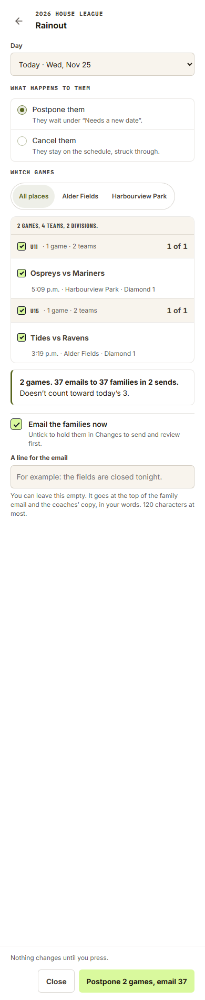<figcaption>The Rainout window (phone)</figcaption></figure><figure>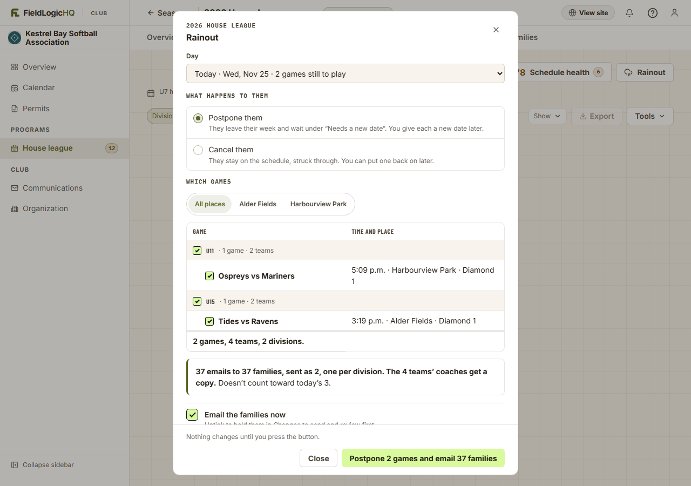<figcaption>The Rainout window (computer)</figcaption></figure><figure>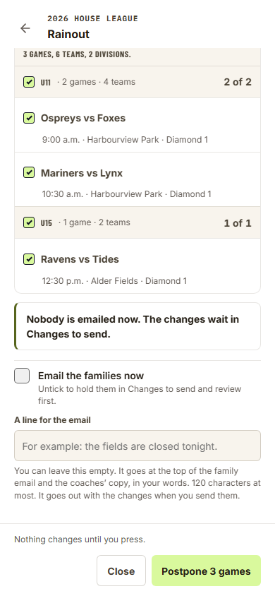<figcaption>Email unticked: the hold</figcaption></figure><figure>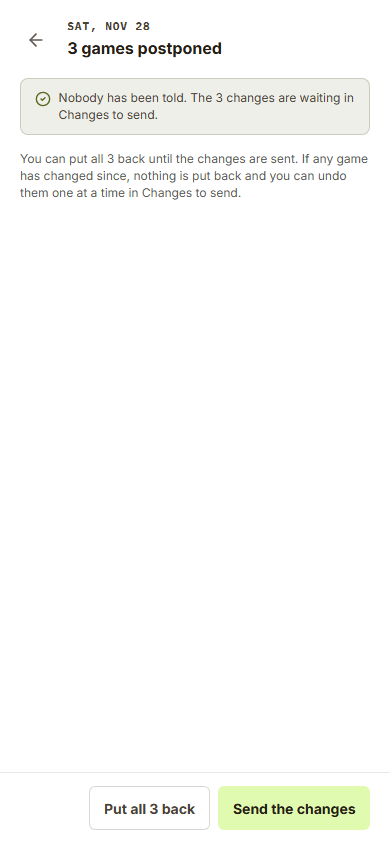<figcaption>Its held result</figcaption></figure><figure>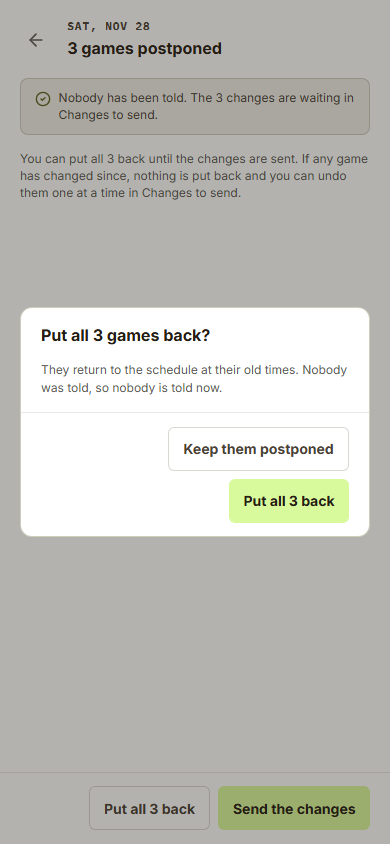<figcaption>Put all back</figcaption></figure><figure>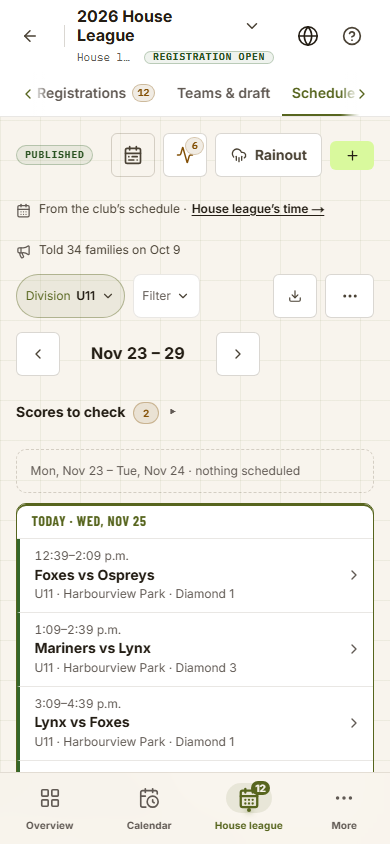<figcaption>The admin season schedule</figcaption></figure><figure>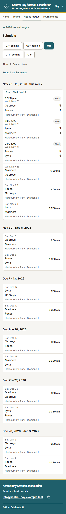<figcaption>Public schedule, U11</figcaption></figure><figure>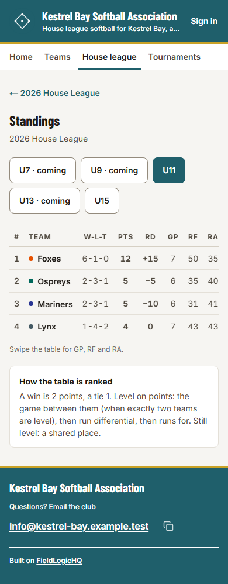<figcaption>Public standings, U11</figcaption></figure><figure><figcaption>Season page</figcaption></figure><figure>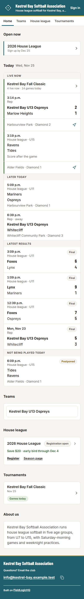<figcaption>Kestrel’s home today</figcaption></figure><figure>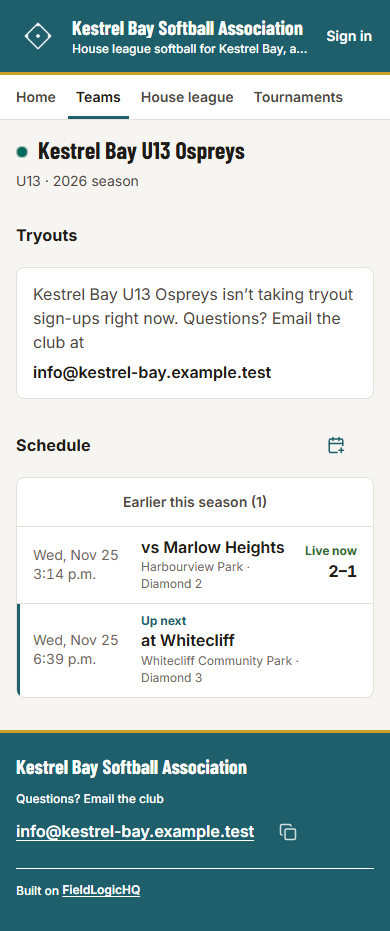<figcaption>A Public rep team page</figcaption></figure><figure>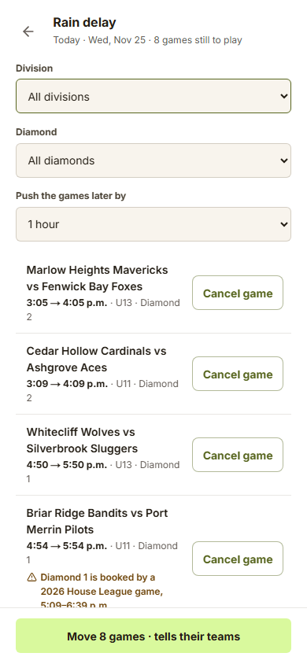<figcaption>The tournament Rain delay</figcaption></figure><figure>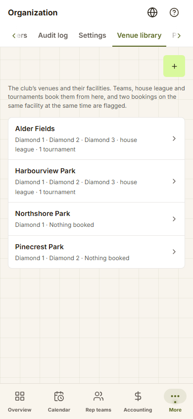<figcaption>The Venue library</figcaption></figure><figure>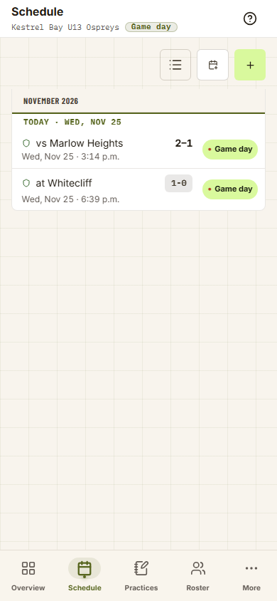<figcaption>A rep coach’s schedule</figcaption></figure></div>
<p class="note">The held result was made by a held Rainout on Sat, Nov 28 (3 games, no email) and put straight back; the 3 games are on again. The notice-up home is Stage 0’s Milton staging capture (the notice frame has not changed since). Computer captures sit beside each phone capture in the same folder.</p>
</section>

<!-- ============ 2 WINDOW ============ -->
<section class="tab" id="window">
<h2 class="t">The window</h2>
<p class="lead">The shipped kit window: a full-screen sheet on a phone, a 640 px dialog at a desk. Phone first. Pick a state.</p>
<div class="sub" role="group"><button data-state="w-main" aria-pressed="true">Phone</button><button data-state="w-pc" aria-pressed="false">Computer</button><button data-state="w-typed" aria-pressed="false">Typed only</button><button data-state="w-live" aria-pressed="false">A game being played</button><button data-state="w-role" aria-pressed="false">A house league admin</button><button data-state="w-empty" aria-pressed="false">Empty</button><button data-state="w-noplaces" aria-pressed="false">No places yet</button></div>
<div class="state on" id="w-main"><div class="pair">
<div class="spec"><span class="cap">Before · the Rainout, <b>one season’s day</b>, captured Wed, Nov 25</span><div class="shot"></div></div>
<div class="spec"><span class="cap">After · <b>Sat, Nov 28, 7:10 a.m.</b> · a club admin on a phone</span><div class="kw tall"><button class="mk new" style="top:-10px;right:0" data-note="Today's Rainout window, widened from one season's day to one place's day across the club (A4, ruled). Same kit window, same choices, same words where the Rainout has them: Postpone them / Cancel them, the line for the email, &quot;Nothing changes until you press.&quot; New: the place and its diamonds, Until, the table grouped by program instead of by division, the typed-by-hand group, the tournament and events rows (no tick: nothing there is changed here), and the strip preview. Gone: &quot;Email the families now&quot; (ask K5: a closure sends at once). Opened from three doors: the club Overview's &quot;Close a place&quot;, the Venue library's toolbar, and the house league schedule's Rainout button (ask K15).">New · S2</button><button class="askm" style="top:-10px;right:84px" data-ask="K2">K2</button><button class="askm" style="top:-10px;right:122px" data-ask="K3">K3</button><button class="askm" style="top:-10px;right:160px" data-ask="K5">K5</button><button class="askm" style="top:-10px;right:198px" data-ask="K7">K7</button><div class="kh ph"><span class="ka"><svg width="20" height="20" viewBox="0 0 24 24" fill="none" stroke="currentColor" stroke-width="2" stroke-linecap="round" stroke-linejoin="round" aria-hidden="true"><path d="M19 12H5M12 19l-7-7 7-7"/></svg></span><div><div class="ke">Venue library</div><div class="kt">Close a place</div></div></div><div class="kb">
<div class="kfld"><div class="kfl">Place</div><div class="ksel">Lions Park</div></div>
<div class="kvs"><span class="on">All diamonds</span><span>Diamond 1</span><span>Diamond 2</span></div>
<div class="krow2"><div class="kfld"><div class="kfl">Day</div><div class="ksel">Today · Sat, Nov 28</div></div><div class="kfld"><div class="kfl">Until</div><div class="ksel">The end of that day</div></div></div>
<div class="kl">What happens to house league games</div>
<div class="krad"><div class="kro on"><i></i><div><div>Postpone them</div><div class="ksm">They wait under “Needs a new date”.</div></div></div><div class="kro"><i></i><div><div>Cancel them</div><div class="ksm">They stay on the schedule, struck through.</div></div></div></div>
<div class="kl">What’s at Lions Park that day</div>
<div class="ktbl"><div class="kg" style="position:relative"><div class="kgh fold"><i class="kcb on"></i><b>House league</b><span>2026 House League · 4 games · 8 teams</span><em>4 of 4</em><i class="kchev"></i></div></div><div class="kg" style="position:relative"><div class="kgh fold"><i class="kcb on"></i><b>Rep</b><span>marked, not moved · 1 game · its head coach is emailed</span><em>1 of 1</em><i class="kchev"></i></div></div><div class="kg" style="position:relative"><div class="kgh"><i class="kcb"></i><b>Place typed by hand</b><span>may be Lions Park · 2 games</span><em>0 of 2</em></div><div class="kgr"><i class="kcb"></i><div><div class="kgt">U15 Ravens vs Whitecliff</div><div class="kgs">2:00 p.m. · Rep</div><div class="kgx">Typed: “Lions Park — Diamond 2”</div></div></div><div class="kgr"><i class="kcb"></i><div><div class="kgt">Wrens vs Finches</div><div class="kgs">1:00 p.m. · House league · U9</div><div class="kgx">Typed: “lions park d1”</div></div></div><div class="kgf"><span class="klink">Link both to Lions Park</span><span class="ksm">So they match next time. Families aren't told: the game is where it was.</span></div></div><div class="kg" style="position:relative"><div class="kgh fold"><b>Not changed here</b><span>1 tournament (its own Rain delay) · 1 club event · 2 practices</span><i class="kchev"></i></div></div></div>

<div class="kst "><div><b>5 games. 58 families emailed in 2 sends, and 1 rep coach.</b> Doesn’t count toward today’s 3.</div></div>
<div class="kst site"><div>Your site says <b>“Lions Park is closed today.”</b> at once, until the end of Sat, Nov 28.</div></div>
<div class="kfld"><span class="klink">Add a line for the families’ email</span><span class="ksm">It goes at the top of their email and the coaches’ copy. It isn’t shown on your site.</span></div></div><div class="kf"><div class="kfs">Nothing changes until you press.</div><div class="kfb"><span class="kbtn o">Not now</span><span class="kbtn p">Close Lions Park, email 58</span></div></div></div></div>
<div class="why"><h4>One place, every program</h4><ul><li>The place comes from the club’s Venue library; its diamonds are one white track: all of them, or one (ask K2). Then the Day and Until (ask K3), stacked on a phone, side by side at a desk.</li><li>The table is grouped by program, not by division: house league (ticked, Postpone or Cancel as today), rep (ticked, <b>marked</b>, never moved, A5), the typed-by-hand group (unticked, A6), then "Not changed here": the tournament (its own Rain delay, A4), the club’s events (E7) and the day’s practices. Each group shows "N of N" as the Rainout does.</li><li>On a phone, every group nobody has to decide on folds to its header (tap to open its games); only the typed-by-hand group and any game already started (tab 2, "A game being played") stay open, because those need a choice. The line for the email is a link until tapped. The window is about one and a half screens instead of two. The computer keeps every group open.</li><li>The typed-by-hand group is the main path, not the edge (Part 1: 5 of 116 typed places on dev match a place’s name exactly). It is found by the place’s name <b>anywhere inside</b> the typed text, any case (ask K7). "Link both" links them inside the closure and tells no family anything (tab 9: today a newly linked place is recorded as a moved game).</li><li>No "Email the families now" tick. A closure sends at once, because the strip goes up at once and a held Rainout leaves every game "on" on every public page (ask K5).</li><li>The strip preview says exactly what families will read on the site. The line for the email is the Rainout’s, and it never reaches the site (ask K16).</li><li>The dismiss button says "Not now", not "Close": "Close" would sit beside "Close Lions Park". (The Rainout says "Close" today; it has no "Close" verb.)</li></ul></div></div></div>
<div class="state" id="w-pc"><div class="pair"><div class="spec"><span class="cap">After · computer · the kit dialog at 640 px, over the Venue library</span><div class="scrollx"><div class="dimbg"><div class="kw pc"><button class="mk new" style="top:-10px;right:0" data-note="Today's Rainout window, widened from one season's day to one place's day across the club (A4, ruled). Same kit window, same choices, same words where the Rainout has them: Postpone them / Cancel them, the line for the email, &quot;Nothing changes until you press.&quot; New: the place and its diamonds, Until, the table grouped by program instead of by division, the typed-by-hand group, the tournament and events rows (no tick: nothing there is changed here), and the strip preview. Gone: &quot;Email the families now&quot; (ask K5: a closure sends at once). Opened from three doors: the club Overview's &quot;Close a place&quot;, the Venue library's toolbar, and the house league schedule's Rainout button (ask K15).">New · S2</button><button class="askm" style="top:-10px;right:84px" data-ask="K1">K1</button><button class="askm" style="top:-10px;right:122px" data-ask="K14">K14</button><div class="kh"><div><div class="ke">Venue library</div><div class="kt">Close a place</div></div><span class="kx">×</span></div><div class="kb">
<div class="kfld"><div class="kfl">Place</div><div class="ksel">Lions Park</div></div>
<div class="kvs"><span class="on">All diamonds</span><span>Diamond 1</span><span>Diamond 2</span></div>
<div class="krow2"><div class="kfld"><div class="kfl">Day</div><div class="ksel">Today · Sat, Nov 28</div></div><div class="kfld"><div class="kfl">Until</div><div class="ksel">The end of that day</div></div></div>
<div class="kl">What happens to house league games</div>
<div class="krad"><div class="kro on"><i></i><div><div>Postpone them</div><div class="ksm">They leave their week and wait under “Needs a new date”. You give each a new date later.</div></div></div><div class="kro"><i></i><div><div>Cancel them</div><div class="ksm">They stay on the schedule, struck through. You can put one back on later.</div></div></div></div>
<div class="kl">What’s at Lions Park that day</div>
<div class="ktbl"><div class="kg" style="position:relative"><div class="kgh"><i class="kcb on"></i><b>House league</b><span>2026 House League · 4 games · 8 teams</span><em>4 of 4</em></div><div class="kgr"><i class="kcb on"></i><div><div class="kgt">Foxes vs Ospreys</div><div class="kgs">9:00 a.m. · Diamond 1 · U11</div></div></div><div class="kgr"><i class="kcb on"></i><div><div class="kgt">Wolves vs Badgers</div><div class="kgs">9:00 a.m. · Diamond 2 · U15</div></div></div><div class="kgr"><i class="kcb on"></i><div><div class="kgt">Lynx vs Mariners</div><div class="kgs">10:30 a.m. · Diamond 1 · U11</div></div></div><div class="kgr"><i class="kcb on"></i><div><div class="kgt">Storm vs Thunder</div><div class="kgs">11:00 a.m. · Diamond 2 · U15</div></div></div></div><div class="kg" style="position:relative"><div class="kgh"><i class="kcb on"></i><b>Rep</b><span>marked for the coach · 1 game</span><em>1 of 1</em></div><div class="kgr"><i class="kcb on"></i><div><div class="kgt">U13 Ospreys vs Marlow Heights</div><div class="kgs">12:30 p.m. · Diamond 1</div><div class="kgx">Marked, not moved. Its head coach is emailed and sets the new date.</div></div></div></div><div class="kg" style="position:relative"><div class="kgh"><i class="kcb"></i><b>Place typed by hand</b><span>may be Lions Park · 2 games</span><em>0 of 2</em></div><div class="kgr"><i class="kcb"></i><div><div class="kgt">U15 Ravens vs Whitecliff</div><div class="kgs">2:00 p.m. · Rep</div><div class="kgx">Typed: “Lions Park — Diamond 2”</div></div></div><div class="kgr"><i class="kcb"></i><div><div class="kgt">Wrens vs Finches</div><div class="kgs">1:00 p.m. · House league · U9</div><div class="kgx">Typed: “lions park d1”</div></div></div><div class="kgf"><span class="klink">Link both to Lions Park</span><span class="ksm">So they match next time. Families aren't told: the game is where it was.</span></div></div><div class="kg" style="position:relative"><div class="kgh"><b>Tournament</b><span>moved in its own Rain delay</span></div><div class="kgr"><i class="kcb none"></i><div><div class="kgt">Kestrel Bay Winter Classic</div><div class="kgs">4 games on Lions Park’s diamonds today</div></div><span class="kdoor">After you close</span></div></div><div class="kg" style="position:relative"><div class="kgh"><b>Club events</b><span>nothing moves by itself</span></div><div class="kgr"><i class="kcb none"></i><div><div class="kgt">Fall skills clinic</div><div class="kgs">1:00 p.m. – 3:00 p.m. · Diamond 2</div></div><span class="kdoor">Open in Events</span></div></div></div>
<p class="kp">2 practices at Lions Park today aren’t changed here: 2 use the club’s time (<u>Schedules</u>).</p>
<div class="kst "><div><b>58 emails to 58 families, sent as 2, one per division. The 8 teams’ coaches get a copy. The U13 Ospreys’ head coach is emailed about the rep game.</b> Doesn’t count toward today’s 3.</div></div>
<div class="kst site"><div>Your site says <b>“Lions Park is closed today.”</b> at once, until the end of Sat, Nov 28.</div></div>
<div class="kfld"><div class="kfl">A line for the families’ email</div><div class="kta">For example: the fields are flooded.</div><div class="ksm">You can leave this empty. It goes at the top of the families’ email and the coaches’ copy. It isn’t shown on your site. 120 characters at most.</div></div></div><div class="kf"><div class="kfs">Nothing changes until you press the button.</div><div class="kfb"><span class="kbtn o">Not now</span><span class="kbtn p">Close Lions Park and email 58 families</span></div></div></div></div></div></div><div class="why"><h4>At a desk</h4><ul><li>The same window, wider: the diamonds stay a white track (as the Rainout’s place switch does for three views or fewer at any width), Day and Until share a line, the radios carry their long subs, and the summary uses the Rainout’s long sentence.</li><li>Before: the computer capture of today’s Rainout is on tab 1’s capture list.</li><li>The table keeps one column on a computer: the Rainout’s two-column "Game | Time and place" is dropped because the tournament and events rows have no time-and-place pair worth a column.</li></ul></div></div></div>
<div class="state" id="w-typed"><div class="pair"><div class="spec"><span class="cap">After · a club whose games are <b>mostly typed</b> (the real case)</span><div class="kw tall"><button class="askm" style="top:-10px;right:0" data-ask="K7">K7</button><div class="kh ph"><span class="ka"><svg width="20" height="20" viewBox="0 0 24 24" fill="none" stroke="currentColor" stroke-width="2" stroke-linecap="round" stroke-linejoin="round" aria-hidden="true"><path d="M19 12H5M12 19l-7-7 7-7"/></svg></span><div><div class="ke">Venue library</div><div class="kt">Close a place</div></div></div><div class="kb">
<div class="kfld"><div class="kfl">Place</div><div class="ksel">Lions Park</div></div>
<div class="kvs"><span class="on">All diamonds</span><span>Diamond 1</span><span>Diamond 2</span></div>
<div class="krow2"><div class="kfld"><div class="kfl">Day</div><div class="ksel">Today · Sat, Nov 28</div></div><div class="kfld"><div class="kfl">Until</div><div class="ksel">The end of that day</div></div></div>
<div class="kl">What happens to house league games</div>
<div class="krad"><div class="kro on"><i></i><div><div>Postpone them</div><div class="ksm">They wait under “Needs a new date”.</div></div></div><div class="kro"><i></i><div><div>Cancel them</div><div class="ksm">They stay on the schedule, struck through.</div></div></div></div>
<div class="kl">What’s at Lions Park that day</div>
<div class="ktbl"><div class="ktbl"><div class="kg" style="position:relative"><div class="kgh"><b>Linked to Lions Park</b><span>nothing</span></div><div class="kgr"><i class="kcb none"></i><div><div class="kgt">No game names Lions Park as its place on Sat, Nov 28.</div><div class="kgs">Games below were found by the name typed in.</div></div></div></div><div class="kg" style="position:relative"><div class="kgh"><i class="kcb some"></i><b>Place typed by hand</b><span>may be Lions Park · 6 games</span><em>5 of 6</em></div><div class="kgr"><i class="kcb on"></i><div><div class="kgt">Foxes vs Ospreys</div><div class="kgs">9:00 a.m. · House league · U11</div><div class="kgx">Typed: “Lions Park — Diamond 1”</div></div></div><div class="kgr"><i class="kcb on"></i><div><div class="kgt">Wolves vs Badgers</div><div class="kgs">9:00 a.m. · House league · U15</div><div class="kgx">Typed: “LIONS PARK D2”</div></div></div><div class="kgr"><i class="kcb on"></i><div><div class="kgt">Lynx vs Mariners</div><div class="kgs">10:30 a.m. · House league · U11</div><div class="kgx">Typed: “Lions Park”</div></div></div><div class="kgr"><i class="kcb on"></i><div><div class="kgt">Storm vs Thunder</div><div class="kgs">11:00 a.m. · House league · U15</div><div class="kgx">Typed: “Lions Park — Diamond 2”</div></div></div><div class="kgr"><i class="kcb on"></i><div><div class="kgt">U13 Ospreys vs Marlow Heights</div><div class="kgs">12:30 p.m. · Rep</div><div class="kgx">Typed: “Lions Park diamond 1 (turf)”</div></div></div><div class="kgr"><i class="kcb"></i><div><div class="kgt">U15 Ravens vs Whitecliff</div><div class="kgs">2:00 p.m. · Rep</div><div class="kgx">Typed: “Lions Pk”</div></div></div><div class="kgf"><span class="klink">Link all 5 ticked to Lions Park</span><span class="ksm">So they match next time. Families aren’t told: the game is where it was.</span></div></div></div></div>

<div class="kst "><div><b>5 games. 58 families emailed in 2 sends, and 1 rep coach.</b></div></div>
<div class="kst site"><div>Your site says <b>“Lions Park is closed today.”</b> at once, until the end of Sat, Nov 28.</div></div>
<div class="kfld"><span class="klink">Add a line for the families’ email</span><span class="ksm">It goes at the top of their email and the coaches’ copy. It isn’t shown on your site.</span></div></div><div class="kf"><div class="kfs">Nothing changes until you press.</div><div class="kfb"><span class="kbtn o">Not now</span><span class="kbtn p">Close Lions Park, email 58</span></div></div></div></div><div class="why"><h4>The typed-by-hand group as the main path</h4><ul><li>Drawn for the club Part 1 found: typed text carries the diamond ("Riverdale Park — Diamond 2" 31 times on dev), so a whole-name match misses it. Here the place’s name is found <b>inside</b> the typed text, any case.</li><li>The admin ticks what is really there. "Lions Pk" is not found by name and is shown here unticked only to draw it; in the build it is not listed at all (the admin would add it with "Link" from the season schedule).</li><li>"Link all 5 ticked" is the way out: next time they are linked. Linking happens inside the same press and is not news to a family (/db: today a newly linked place is recorded as a moved game and would email them; the build changes that, tab 9).</li><li>Ask K7. A whole-day "All our places" closure (tab 8) needs no matching at all: it takes every game that day.</li></ul></div></div></div>
<div class="state" id="w-live"><div class="pair"><div class="spec"><span class="cap">After · <b>10:15 a.m.</b> · two games already under way</span><div class="kw tall"><button class="askm" style="top:-10px;right:0" data-ask="K6">K6</button><div class="kh ph"><span class="ka"><svg width="20" height="20" viewBox="0 0 24 24" fill="none" stroke="currentColor" stroke-width="2" stroke-linecap="round" stroke-linejoin="round" aria-hidden="true"><path d="M19 12H5M12 19l-7-7 7-7"/></svg></span><div><div class="ke">Venue library</div><div class="kt">Close a place</div></div></div><div class="kb">
<div class="kfld"><div class="kfl">Place</div><div class="ksel">Lions Park</div></div>
<div class="kvs"><span class="on">All diamonds</span><span>Diamond 1</span><span>Diamond 2</span></div>
<div class="krow2"><div class="kfld"><div class="kfl">Day</div><div class="ksel">Today · Sat, Nov 28</div></div><div class="kfld"><div class="kfl">Until</div><div class="ksel">The end of that day</div></div></div>
<div class="kl">What happens to house league games</div>
<div class="krad"><div class="kro on"><i></i><div><div>Postpone them</div><div class="ksm">They wait under “Needs a new date”.</div></div></div><div class="kro"><i></i><div><div>Cancel them</div><div class="ksm">They stay on the schedule, struck through.</div></div></div></div>
<div class="kl">What’s at Lions Park that day</div>
<div class="ktbl"><div class="ktbl"><div class="kg" style="position:relative"><div class="kgh"><i class="kcb some"></i><b>House league</b><span>2026 House League · 4 games</span><em>2 of 4</em></div><div class="kgr"><i class="kcb"></i><div><div class="kgt">Foxes vs Ospreys</div><div class="kgs">9:00 a.m. · Diamond 1 · U11</div><div class="kgx"><b>Started at 9:00 a.m.</b> Tick it to call it off mid-game.</div></div></div><div class="kgr"><i class="kcb"></i><div><div class="kgt">Wolves vs Badgers</div><div class="kgs">9:00 a.m. · Diamond 2 · U15</div><div class="kgx"><b>Started at 9:00 a.m.</b></div></div></div><div class="kgr"><i class="kcb on"></i><div><div class="kgt">Lynx vs Mariners</div><div class="kgs">10:30 a.m. · Diamond 1 · U11</div></div></div><div class="kgr"><i class="kcb on"></i><div><div class="kgt">Storm vs Thunder</div><div class="kgs">11:00 a.m. · Diamond 2 · U15</div></div></div></div><div class="kg" style="position:relative"><div class="kgh"><i class="kcb on"></i><b>Rep</b><span>marked for the coach · 1 game</span><em>1 of 1</em></div><div class="kgr"><i class="kcb on"></i><div><div class="kgt">U13 Ospreys vs Marlow Heights</div><div class="kgs">12:30 p.m. · Diamond 1</div><div class="kgx">Marked, not moved. Its head coach is emailed and sets the new date.</div></div></div></div><div class="kg" style="position:relative"><div class="kgh"><b>Tournament</b><span>moved in its own Rain delay</span></div><div class="kgr"><i class="kcb none"></i><div><div class="kgt">Kestrel Bay Winter Classic</div><div class="kgs">4 games on Lions Park’s diamonds today</div></div><span class="kdoor">After you close</span></div></div></div></div>

<div class="kst "><div><b>3 games. 29 families emailed in 2 sends, and 1 rep coach.</b></div></div>
<div class="kst site"><div>Your site says <b>“Lions Park is closed today.”</b> at once, until the end of Sat, Nov 28.</div></div>
<div class="kfld"><span class="klink">Add a line for the families’ email</span><span class="ksm">It goes at the top of their email and the coaches’ copy. It isn’t shown on your site.</span></div></div><div class="kf"><div class="kfs">Nothing changes until you press.</div><div class="kfb"><span class="kbtn o">Not now</span><span class="kbtn p">Close Lions Park, email 29</span></div></div></div></div><div class="why"><h4>A game being played</h4><ul><li>Neither tool has a live state today: both call off every scheduled game on the day, so a noon closure postpones the 11:00 a.m. game mid-play (Part 1, item 4).</li><li>Here a game whose start time has passed is listed <b>unticked</b>, with "Started at 9:00 a.m." The admin ticks it to call it off (lightning), or leaves it to finish.</li><li>A game with a score is never listed (as today). Already postponed or cancelled: never listed.</li><li>Ask K6.</li></ul></div></div></div>
<div class="state" id="w-role"><div class="pair"><div class="spec"><span class="cap">After · a <b>house league admin</b>, from the season schedule’s Rainout button</span><div class="kw tall"><button class="askm" style="top:-10px;right:0" data-ask="K1">K1</button><div class="kh ph"><span class="ka"><svg width="20" height="20" viewBox="0 0 24 24" fill="none" stroke="currentColor" stroke-width="2" stroke-linecap="round" stroke-linejoin="round" aria-hidden="true"><path d="M19 12H5M12 19l-7-7 7-7"/></svg></span><div><div class="ke">2026 House League</div><div class="kt">Close a place</div></div></div><div class="kb">
<div class="kfld"><div class="kfl">Place</div><div class="ksel">Lions Park</div></div>
<div class="kvs"><span class="on">All diamonds</span><span>Diamond 1</span><span>Diamond 2</span></div>
<div class="krow2"><div class="kfld"><div class="kfl">Day</div><div class="ksel">Today · Sat, Nov 28</div></div><div class="kfld"><div class="kfl">Until</div><div class="ksel">The end of that day</div></div></div>
<div class="kl">What happens to house league games</div>
<div class="krad"><div class="kro on"><i></i><div><div>Postpone them</div><div class="ksm">They wait under “Needs a new date”.</div></div></div><div class="kro"><i></i><div><div>Cancel them</div><div class="ksm">They stay on the schedule, struck through.</div></div></div></div>
<div class="kl">What’s at Lions Park that day</div>
<div class="ktbl"><div class="ktbl"><div class="kg" style="position:relative"><div class="kgh"><i class="kcb on"></i><b>House league</b><span>2026 House League · 4 games · 8 teams</span><em>4 of 4</em></div><div class="kgr"><i class="kcb on"></i><div><div class="kgt">Foxes vs Ospreys</div><div class="kgs">9:00 a.m. · Diamond 1 · U11</div></div></div><div class="kgr"><i class="kcb on"></i><div><div class="kgt">Wolves vs Badgers</div><div class="kgs">9:00 a.m. · Diamond 2 · U15</div></div></div><div class="kgr"><i class="kcb on"></i><div><div class="kgt">Lynx vs Mariners</div><div class="kgs">10:30 a.m. · Diamond 1 · U11</div></div></div><div class="kgr"><i class="kcb on"></i><div><div class="kgt">Storm vs Thunder</div><div class="kgs">11:00 a.m. · Diamond 2 · U15</div></div></div></div><div class="kg" style="position:relative"><div class="kgh"><b>Rep</b><span>1 game · marked for its coach</span></div><div class="kgr"><i class="kcb none"></i><div><div class="kgt">1 rep game at Lions Park that day</div><div class="kgs">It is marked for its coach when you close.</div></div></div></div><div class="kg" style="position:relative"><div class="kgh"><b>Tournament</b><span>its director moves them</span></div><div class="kgr"><i class="kcb none"></i><div><div class="kgt">Kestrel Bay Winter Classic</div><div class="kgs">4 games on Lions Park’s diamonds today</div></div></div></div></div></div>

<div class="kst "><div><b>5 games. 58 families emailed in 2 sends, and 1 rep coach.</b> Doesn’t count toward today’s 3.</div></div>
<div class="kst site"><div>Your site says <b>“Lions Park is closed today.”</b> at once, until the end of Sat, Nov 28.</div></div>
<div class="kfld"><span class="klink">Add a line for the families’ email</span><span class="ksm">It goes at the top of their email and the coaches’ copy. It isn’t shown on your site.</span></div></div><div class="kf"><div class="kfs">Nothing changes until you press.</div><div class="kfb"><span class="kbtn o">Not now</span><span class="kbtn p">Close Lions Park, email 58</span></div></div></div></div><div class="why"><h4>What a person without some programs sees</h4><ul><li>The Rainout today is the owner’s, an admin’s or a house league admin’s; the Rain delay is the owner’s, an admin’s or tournament staff’s; the notice the owner’s or an admin’s (Part 1, item 8). Four tools, four role sets.</li><li>Recommended (K1): the Rainout’s people close and reopen a place. The place is the club’s, so a closure reaches every program. A house league admin still marks the rep game (marking is a fact about the field, not a change to the rep schedule), but sees rep and tournament rows as a count with no names and no door: the club calendar’s clash line and the Venue library’s "Booked by" already show other programs that way.</li><li>The tournament row has no door for them: the Rain delay is tournament staff’s. The result tells them who moves those games.</li></ul></div></div></div>
<div class="state" id="w-empty"><div class="pair"><div class="spec"><span class="cap">After · <b>nothing scheduled</b> at that place</span><div class="kw" style="min-height:560px"><div class="kh ph"><span class="ka"><svg width="20" height="20" viewBox="0 0 24 24" fill="none" stroke="currentColor" stroke-width="2" stroke-linecap="round" stroke-linejoin="round" aria-hidden="true"><path d="M19 12H5M12 19l-7-7 7-7"/></svg></span><div><div class="ke">Venue library</div><div class="kt">Close a place</div></div></div><div class="kb"><div class="kfld"><div class="kfl">Place</div><div class="ksel">Pinecrest Park</div></div><div class="kvs"><span class="on">All diamonds</span><span>Diamond 1</span><span>Diamond 2</span></div><div class="krow2"><div class="kfld"><div class="kfl">Day</div><div class="ksel">Today · Sat, Nov 28</div></div><div class="kfld"><div class="kfl">Until</div><div class="ksel">The end of that day</div></div></div><div class="kl">What’s at Pinecrest Park that day</div><div class="kempty">Nothing is scheduled at Pinecrest Park on Sat, Nov 28. Closing it still tells families on your site.</div><div class="kst site"><div>Your site says <b>“Pinecrest Park is closed today.”</b> at once, until the end of Sat, Nov 28.</div></div></div><div class="kf"><div class="kfs">Nothing changes until you press.</div><div class="kfb"><span class="kbtn o">Not now</span><span class="kbtn p">Close Pinecrest Park</span></div></div></div></div><div class="why"><h4>Empty</h4><ul><li>The window still closes the place: a park closed by the town for a week is worth saying on the site even with no games in it (a practice there is named, as the Rainout names them).</li><li>No email, so the button says only "Close Pinecrest Park".</li></ul></div></div></div>
<div class="state" id="w-noplaces"><div class="pair"><div class="spec"><span class="cap">After · a club with <b>no places</b> (every club on production today)</span><div class="kw" style="min-height:300px"><button class="askm" style="top:-10px;right:0" data-ask="K8">K8</button><div class="kh ph"><span class="ka"><svg width="20" height="20" viewBox="0 0 24 24" fill="none" stroke="currentColor" stroke-width="2" stroke-linecap="round" stroke-linejoin="round" aria-hidden="true"><path d="M19 12H5M12 19l-7-7 7-7"/></svg></span><div><div class="kt">Close a place</div></div></div><div class="kb"><div class="kempty"><b>Your club has no places yet.</b><br>Add your parks and diamonds in the Venue library, then close one here. Your schedules can keep their typed places; a closure finds them by the place’s name.</div></div><div class="kf"><div class="kfb"><span class="kbtn o">Not now</span><span class="kbtn p">Open the Venue library</span></div></div></div></div><div class="why"><h4>Nothing linked at all</h4><ul><li>Production has 0 places and 0 diamonds in any club’s list; every rep event there is typed or blank, and no tournament diamond is linked (Part 1, item 1). So on launch day, the first thing a club meets is this.</li><li>A closure needs one place to name. Nothing else has to be linked first: the typed-by-hand group finds games by name (tab 2, "Typed only").</li><li>Ask K8: where the owner’s "every schedule uses real places" (R4) sits. Recommended: Stage 2 does not wait for it.</li></ul></div></div></div>
</section>

<!-- ============ 3 RESULT ============ -->
<section class="tab" id="result">
<h2 class="t">The result, Reopen and the tournament hand-off</h2>
<div class="sub" role="group"><button data-state="r-main" aria-pressed="true">The result</button><button data-state="r-lib" aria-pressed="false">Where it lives</button><button data-state="r-reopen" aria-pressed="false">Reopen</button><button data-state="r-rd" aria-pressed="false">Rain delay</button><button data-state="r-unl" aria-pressed="false">Not linked</button></div>
<div class="state on" id="r-main"><div class="pair">
<div class="spec"><span class="cap">Before · the Rainout’s held result, captured Wed, Nov 25</span><div class="shot"></div></div>
<div class="spec"><span class="cap">After · the moment after pressing</span><div class="kw tall"><button class="mk new" style="top:-10px;right:0" data-note="The Rainout's result, widened. Same shipped pieces: the green Statement for what was done (its &quot;214 emails sent (U10 74, …). The teams’ coaches have a copy.&quot; sentence), the &quot;Emails can’t be taken back&quot; line, and its two buttons. New: the rep line, the amber tournament row with its door, and where the strip is and how to take it down. The Rainout's held result (Put all back) is gone with the hold (K5).">New · S2</button><button class="askm" style="top:-10px;right:84px" data-ask="K13">K13</button><div class="kh ph"><span class="ka"><svg width="20" height="20" viewBox="0 0 24 24" fill="none" stroke="currentColor" stroke-width="2" stroke-linecap="round" stroke-linejoin="round" aria-hidden="true"><path d="M19 12H5M12 19l-7-7 7-7"/></svg></span><div><div class="ke">Sat, Nov 28</div><div class="kt">Lions Park closed</div></div></div><div class="kb">
<div class="kst ok"><svg width="16" height="16" viewBox="0 0 24 24" fill="none" stroke="currentColor" stroke-width="2.4" stroke-linecap="round" stroke-linejoin="round" aria-hidden="true"><circle cx="12" cy="12" r="9"/><path d="M8 12.5l2.6 2.5L16 9.5"/></svg><div>4 house league games postponed. 58 emails sent (U11 31, U15 27). The 8 teams’ coaches have a copy.</div></div>
<div class="kst ok"><svg width="16" height="16" viewBox="0 0 24 24" fill="none" stroke="currentColor" stroke-width="2.4" stroke-linecap="round" stroke-linejoin="round" aria-hidden="true"><circle cx="12" cy="12" r="9"/><path d="M8 12.5l2.6 2.5L16 9.5"/></svg><div>1 rep game marked. The U13 Ospreys’ head coach was emailed.</div></div>
<div class="kst warn"><svg width="16" height="16" viewBox="0 0 24 24" fill="none" stroke="currentColor" stroke-width="2.2" stroke-linecap="round" stroke-linejoin="round" aria-hidden="true"><path d="M10.3 3.9L1.8 18a2 2 0 001.7 3h17a2 2 0 001.7-3L13.7 3.9a2 2 0 00-3.4 0z"/><path d="M12 9v4M12 17h.01"/></svg><div><b>2 games with a typed place weren’t changed.</b> They may be at Lions Park, and they still show as scheduled.<div style="margin-top:10px"><span class="kbtn o">See the 2 games</span></div></div></div>
<div class="kst warn"><svg width="16" height="16" viewBox="0 0 24 24" fill="none" stroke="currentColor" stroke-width="2.2" stroke-linecap="round" stroke-linejoin="round" aria-hidden="true"><path d="M10.3 3.9L1.8 18a2 2 0 001.7 3h17a2 2 0 001.7-3L13.7 3.9a2 2 0 00-3.4 0z"/><path d="M12 9v4M12 17h.01"/></svg><div><b>Kestrel Bay Winter Classic: its 4 games at Lions Park aren’t moved yet.</b> Its families hear through its Rain delay.<div style="margin-top:10px"><span class="kbtn o">Open its Rain delay</span></div></div></div>
<p class="kp">Your site says “Lions Park is closed today.” until the end of Sat, Nov 28. Reopen it from the Venue library.</p>
<p class="kp">Emails can’t be taken back. To change a game, give it a new date; its families are told again.</p></div><div class="kf"><div class="kfb"><span class="kbtn o">Give them new dates</span><span class="kbtn p">Done</span></div></div></div></div>
<div class="why"><h4>The result</h4><ul><li>Every program in the order the window listed them. Amber rows are things still "on" that may be at the closed place: the typed games the admin left unticked (so the strip and those two games never disagree silently), and the tournament.</li><li>A rep team with no head coach on file: the email goes to its other coaches; with none, the rep line reads "The U13 Ospreys have no coach to email, so let the team know yourself." The press emails the coach whoever pressed it.</li><li>"Open its Rain delay" opens that tournament’s Rain delay on Sat, Nov 28 with Lions Park’s diamonds already picked (ask K13; drawn on this tab, "Rain delay").</li><li>No Put all back: the families were emailed at the press (K5). Reopen is in the Venue library (next state).</li></ul></div></div></div>
<div class="state" id="r-lib"><div class="pair">
<div class="spec"><span class="cap">Before · the Venue library, captured Wed, Nov 25</span><div class="shot"></div></div>
<div class="spec"><span class="cap">After · while Lions Park is closed (cropped: the header icons, tab strip and intro line are unchanged)</span><div class="adm"><div class="ah"><b>Organization</b><span>Venue library</span></div><div class="ap">
<div class="atool"><span class="kbtn o sm">Close a place</span><span class="kbtn p sq">+</span></div>
<div class="acl" style="position:relative"><button class="mk new" style="top:-10px;right:0" data-note="A closure showing on the site sits at the top of the Venue library (and as one line in the club Overview's tray): the place, the day, who closed it and when, and Reopen. One row per closure. A closure that has ended by itself at Until is gone from here.">New · S2</button><button class="askm" style="top:-10px;right:84px" data-ask="K11">K11</button><span class="kpill warn">Closed</span><div><b>Lions Park · all diamonds</b><div class="ksm">Sat, Nov 28 · closed 7:10 a.m. by Dana Reyes · 4 postponed, 1 rep game marked</div></div><span class="kbtn o sm">Reopen</span></div>
<div class="alist"><div class="ali"><b>Alder Fields</b><span>Diamond 1 · Diamond 2 · Diamond 3 · house league · 1 tournament</span></div><div class="ali"><b>Harbourview Park</b><span>Diamond 1 · Diamond 2 · Diamond 3 · house league · 1 tournament</span></div><div class="ali"><b>Lions Park</b><span><span class="kpill warn sm">Closed today</span> Diamond 1 · Diamond 2 · house league · rep · 1 tournament</span></div><div class="ali"><b>Pinecrest Park</b><span>Diamond 1 · Diamond 2 · Nothing booked</span></div></div></div></div></div>
<div class="why"><h4>Where a closure lives</h4><ul><li>The Venue library is where a place lives, so a closure does too: one row at the top while it shows on the site, with Reopen.</li><li>The person’s name is staff-facing only (this is the admin). The site never says who closed it, only "by the club".</li><li>Its "Close a place" toolbar button is one of the window’s three doors.</li></ul></div></div></div>
<div class="state" id="r-reopen"><div class="pair">
<div class="spec"><span class="cap">Reopen · the question, once families were emailed (the only case now)</span><div class="kw" style="min-height:380px"><button class="askm" style="top:-10px;right:0" data-ask="K11">K11</button><div class="kh ph"><span class="ka"><svg width="20" height="20" viewBox="0 0 24 24" fill="none" stroke="currentColor" stroke-width="2" stroke-linecap="round" stroke-linejoin="round" aria-hidden="true"><path d="M19 12H5M12 19l-7-7 7-7"/></svg></span><div><div class="kt">Reopen Lions Park?</div></div></div><div class="kb"><p class="kp">Your site stops saying it’s closed, at once.</p><p class="kp">The U13 Ospreys’ game loses its mark, and its head coach gets one line: Lions Park reopened, the game wasn’t moved, keep it or move it.</p><p class="kp"><b>The 4 postponed games stay under “Needs a new date”.</b> Their families were emailed, so give each a new date from the schedule and they’re told again.</p></div><div class="kf"><div class="kfb"><span class="kbtn o">Keep it closed</span><span class="kbtn p">Reopen and email 1 coach</span></div></div></div></div>
<div class="spec"><span class="cap">Reopen · the result</span><div class="kw" style="min-height:330px"><div class="kh ph"><span class="ka"><svg width="20" height="20" viewBox="0 0 24 24" fill="none" stroke="currentColor" stroke-width="2" stroke-linecap="round" stroke-linejoin="round" aria-hidden="true"><path d="M19 12H5M12 19l-7-7 7-7"/></svg></span><div><div class="ke">Sat, Nov 28</div><div class="kt">Lions Park reopened</div></div></div><div class="kb"><div class="kst ok"><svg width="16" height="16" viewBox="0 0 24 24" fill="none" stroke="currentColor" stroke-width="2.4" stroke-linecap="round" stroke-linejoin="round" aria-hidden="true"><circle cx="12" cy="12" r="9"/><path d="M8 12.5l2.6 2.5L16 9.5"/></svg><div>Your site no longer says it’s closed. The U13 Ospreys’ head coach was emailed.</div></div><div class="kst warn"><svg width="16" height="16" viewBox="0 0 24 24" fill="none" stroke="currentColor" stroke-width="2.2" stroke-linecap="round" stroke-linejoin="round" aria-hidden="true"><path d="M10.3 3.9L1.8 18a2 2 0 001.7 3h17a2 2 0 001.7-3L13.7 3.9a2 2 0 00-3.4 0z"/><path d="M12 9v4M12 17h.01"/></svg><div><b>4 games still need new dates.</b> Their families are told when you give each one.</div></div></div><div class="kf"><div class="kfb"><span class="kbtn o">Done</span><span class="kbtn p">Give them new dates</span></div></div></div></div>
<div class="why"><h4>What Reopen puts back, and what it cannot</h4><ul><li>Reopen takes down the strip and every rep mark at once. That part is a stored state, so nothing waits for a job.</li><li>The rep coach was emailed at 7 a.m.; at 11 a.m. their chip would just vanish. So Reopen sends each marked game’s head coach one fixed line ("{Club} reopened Lions Park. Your game on Sat, Nov 28 at 12:30 p.m. wasn’t moved. Keep it or move it."), and only for a game the coach hasn’t already moved. It is an email like the closure’s: the same sender, the same "sent this" and reason lines, the same reply line.</li><li>It cannot put the house league games back. The Rainout’s Put all back works only while nothing was sent ("These changes were already sent, so they can’t be put back."), and a closure always sends. The result’s button goes straight to giving them new dates, which tells families again, as today.</li><li>Option B on K11: Reopen also offers "Put back the games that haven’t started" and emails those families a "Back on" (a kind of change the schedule already sends). That serves a same-day reopen with afternoon games; it is a second email in one morning.</li></ul></div></div></div>
<div class="state" id="r-rd"><div class="pair">
<div class="spec"><span class="cap">Before · the Rain delay, captured Wed, Nov 25</span><div class="shot"></div></div>
<div class="spec"><span class="cap">After · opened from "Open its Rain delay"</span><div class="kw tall" style="position:relative"><button class="mk res" style="top:-10px;right:0" data-note="The tournament Rain delay, opened from the closure. Unchanged: its controls, its game rows, its own families' notice (a pinned post on the public schedule and a push; it sends no email). Changed: it can now open on a given day with a set of diamonds picked (today it opens on its first day with every filter on &quot;all&quot;, and its Diamond filter takes one), and it says why in one amber line. Opened from a tournament whose diamonds are not linked to the club's places, it opens on that day with All diamonds.">Restyled · S2</button><button class="askm" style="top:-10px;right:118px" data-ask="K13">K13</button><div class="kh ph"><span class="ka"><svg width="20" height="20" viewBox="0 0 24 24" fill="none" stroke="currentColor" stroke-width="2" stroke-linecap="round" stroke-linejoin="round" aria-hidden="true"><path d="M19 12H5M12 19l-7-7 7-7"/></svg></span><div><div class="kt">Rain delay</div><div class="ksm">Sat, Nov 28 · 4 games at Lions Park</div></div></div><div class="kb">
<div class="kst warn"><svg width="16" height="16" viewBox="0 0 24 24" fill="none" stroke="currentColor" stroke-width="2.2" stroke-linecap="round" stroke-linejoin="round" aria-hidden="true"><path d="M10.3 3.9L1.8 18a2 2 0 001.7 3h17a2 2 0 001.7-3L13.7 3.9a2 2 0 00-3.4 0z"/><path d="M12 9v4M12 17h.01"/></svg><div><b>Kestrel Bay closed Lions Park today.</b> Its diamonds are picked below. Push the games later, or cancel them.</div></div>
<div class="kfld"><div class="kfl">Division</div><div class="ksel">All divisions</div></div><div class="kfld"><div class="kfl">Diamond</div><div class="ksel">Lions Park · Diamond 1, Diamond 2</div></div><div class="kfld"><div class="kfl">Push the games later by</div><div class="ksel">1 hour</div></div>
<div class="rdg"><div><b>Cedar Hollow Cardinals vs Ashgrove Aces</b><div class="ksm"><b>9:00 → 10:00 a.m.</b> · U11 · Lions Park · Diamond 1</div></div><span class="kbtn o">Cancel game</span></div>
<div class="rdg"><div><b>Marlow Heights Mavericks vs Fenwick Bay Foxes</b><div class="ksm"><b>9:30 → 10:30 a.m.</b> · U13 · Lions Park · Diamond 2</div></div><span class="kbtn o">Cancel game</span></div>
</div><div class="kf"><div class="kfb"><span class="kbtn p wide">Move 4 games · tells their teams</span></div></div></div></div>
<div class="why"><h4>The tournament hand-off</h4><ul><li>Tournament games are never moved by the closure (A4): the Rain delay knows game order, the families’ notice and the push.</li><li>Today a tournament game reaches a club place only through a diamond imported from the Venue library: 2 of 62 diamonds on dev, none on production. The window counts what is linked and says plainly when it can’t (next state).</li><li>The person needs the tournament’s own schedule rights (owner, admin, or staff on that tournament). Without them, the row has no door (tab 2, "A house league admin").</li></ul></div></div></div>
<div class="state" id="r-unl"><div class="pair"><div class="spec"><span class="cap">After · a tournament whose diamonds are <b>not linked</b> (most of them)</span><div class="kw" style="padding:16px;gap:16px;display:flex;flex-direction:column;position:relative"><button class="askm" style="top:-10px;right:0" data-ask="K13">K13</button><div class="kl" style="margin:0">In the window</div><div class="ktbl"><div class="kg" style="position:relative"><div class="kgh"><b>Tournament</b><span>moved in its own Rain delay</span></div><div class="kgr"><i class="kcb none"></i><div><div class="kgt">Battle of the Bats</div><div class="kgs">Plays today. Its diamonds aren’t linked to your places, so its games aren’t counted here.</div></div><span class="kdoor plain">After you close</span></div></div></div><div class="kl" style="margin:0">In the result</div><div class="kst warn"><svg width="16" height="16" viewBox="0 0 24 24" fill="none" stroke="currentColor" stroke-width="2.2" stroke-linecap="round" stroke-linejoin="round" aria-hidden="true"><path d="M10.3 3.9L1.8 18a2 2 0 001.7 3h17a2 2 0 001.7-3L13.7 3.9a2 2 0 00-3.4 0z"/><path d="M12 9v4M12 17h.01"/></svg><div><b>Battle of the Bats plays today.</b> Its diamonds aren’t linked to your places. If it plays at Lions Park, open its Rain delay.<div style="margin-top:10px"><span class="kbtn o">Open its Rain delay</span></div></div></div></div></div><div class="why"><h4>When nothing is linked</h4><ul><li>Any tournament with games that day is listed, linked or not. Linked: its games at the place are counted. Not linked: it says so in one fixed sentence, and the same door opens its Rain delay on that day with All diamonds.</li><li>This keeps the window honest without waiting for R4.</li></ul></div></div></div>
</section>

<!-- ============ 4 HOME ============ -->
<section class="tab" id="home">
<h2 class="t">The home</h2>
<p class="lead">The fixed order (A1): notice slot → Open now → the games part → News → the rest. A closed place rides the notice slot (A2). Stage 1’s games part is unchanged in shape.</p>
<div class="sub" role="group"><button data-state="h-main" aria-pressed="true">Phone</button><button data-state="h-pc" aria-pressed="false">Computer</button><button data-state="h-two" aria-pressed="false">Two places</button><button data-state="h-eve" aria-pressed="false">The evening before</button></div>
<div class="state on" id="h-main"><div class="pair">
<div class="spec"><span class="cap">Before · the home with the club’s notice up (Stage 0’s Milton capture; the notice frame is unchanged)</span><div class="shot">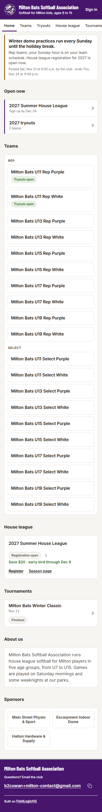</div></div>
<div class="spec"><span class="cap">After · <b>Sat, Nov 28, 7:20 a.m.</b></span><div class="fr kb"><div class="fold"><span>first screen ends</span></div>
<div class="bar dim"><div class="logo"><svg width="26" height="26" viewBox="0 0 24 24" fill="none" stroke="currentColor" stroke-width="2" aria-hidden="true"><rect x="6" y="6" width="12" height="12" transform="rotate(45 12 12)"/><circle cx="12" cy="12" r="1.5" fill="currentColor"/></svg></div><div><div class="cn">Kestrel Bay Softball Association</div><div class="tg">House league softball for Kestrel Bay, and more</div></div><div class="si">Sign in</div></div>
<div class="tabrow dim"><span class="on">Home</span><span>Teams</span><span>House league</span><span>Tournaments</span></div><div class="notice cl" style="position:relative"><button class="mk new" style="top:-10px;right:0" data-note="The closure strip in the home's notice slot (A2, ruled: a closed place rides the notice slot; no news post). It is read from the closure itself, not written into the club notice: so the club's own notice stays (below it), two closed places show, and a closure set tonight shows tonight. Same look as the notice: card, amber left edge, the bold line and the small line. Fixed words only: no reason, no count, no name (K16). Shown on every club, team and house league page the notice reaches; not on a tournament's pages (K12).">New · S2</button><button class="askm" style="top:-10px;right:84px" data-ask="K4">K4</button><button class="askm" style="top:-10px;right:122px" data-ask="K16">K16</button><b>Lions Park is closed today.</b><span class="s">Posted 7:10 a.m. by the club · ends tonight</span></div><div class="notice dim" style="position:relative"><b>Picture day is next Saturday</b><span class="d">Teams have their times by email.</span><span class="s">Posted Tue, Nov 24 at 6:02 p.m. by the club · ends Sat, Dec 5 at midnight</span></div>
<div class="pg"><div class="sec dim"><h5>Open now</h5><div class="list door"><div class="row chev" style="position:relative"><div class="rt">2026 House League</div><div class="rs">Sign up by Dec 25</div></div></div></div><div class="sec"><h5>Today <span class="dt">Sat, Nov 28</span></h5><div class="lb" style="position:relative">Later today</div><div class="list"><div class="row chev" style="position:relative"><div class="rt">Kestrel Bay Winter Classic</div><div class="rs">22 games today · first at 8:00 a.m.</div></div><div class="gw" style="position:relative"><div class="g"><div class="gh"><div><div class="tm">9:00 a.m.</div><div class="cx">House league · U11</div></div></div><div class="tms"><div class="sd"><span>Lynx</span><b></b></div><div class="sd"><span>Mariners</span><b></b></div></div><div class="gpl">Harbourview Park · Diamond 1</div></div></div><div class="gw" style="position:relative"><div class="g"><div class="gh"><div><div class="tm">9:30 a.m.</div><div class="cx">Rep</div></div></div><div class="tms"><div class="sd own"><span>Kestrel Bay U11 Kites</span><b></b></div><div class="sd"><span>Port Merrin</span><b></b></div></div><div class="gpl">Harbourview Park · Diamond 2</div></div></div></div><div class="lb" style="position:relative"><button class="mk res" style="top:-2px;right:0" data-note="Stage 1’s fold, unchanged in shape: more than three called-off house league games in one season on one day become one row, &quot;{season} · {place if all at one} · from {time}&quot;. The strip says the place is closed; this row says what happened to the games. Neither repeats the other: the strip carries no count (and /db asks that it never does), the fold never says &quot;closed&quot;.">Restyled · S2</button><button class="mk new" style="top:-2px;right:96px" data-note="A marked rep game (A5) leaves Later today for Not being played today, with the amber &quot;Place closed&quot; pill and &quot;Lions Park closed · waits for a new date&quot; It stays a scheduled game in the coach’s book until the coach moves it. Ask K9.">New · S2</button>Not being played today</div><div class="list"><div class="row chev" style="position:relative"><div class="rt">4 house league games postponed</div><div class="rs">2026 House League · Lions Park · from 9:00 a.m.</div></div><div class="gw" style="position:relative"><div class="g"><div class="gh"><div><div class="tm">12:30 p.m.</div><div class="cx">Rep</div></div><span class="pill warn">Place closed</span></div><div class="tms"><div class="sd own"><span>Kestrel Bay U13 Ospreys</span><b></b></div><div class="sd"><span>Marlow Heights</span><b></b></div></div><div class="nos">Lions Park closed · waits for a new date</div></div></div></div></div></div>
<div class="foot dim"><div class="cn">Kestrel Bay Softball Association</div><small>Questions? Email the club</small><small>Built on FieldLogicHQ</small></div></div></div>
<div class="why"><h4>The notice slot and the band, without saying it twice</h4><ul><li>The notice slot (A1, A2) holds the closure first and the club’s own notice second, each its own box. Today a second notice ends the first, so a closure written as a notice would have taken "Picture day" down.</li><li>The strip says where; the band says what happened to the games. The strip has no count and no reason; the fold row never says "closed".</li><li>The tournament row is unchanged: a tournament’s games are its Rain delay’s to call off, and its row says "22 games today" until its director acts.</li><li>The rep game moves to Not being played today with "Place closed" (K9).</li></ul></div></div></div>
<div class="state" id="h-pc"><div class="pair"><div class="spec"><span class="cap">After · computer, 1280 px (first screen)</span><div class="scrollx"><div class="fr kb pc" style="width:1280px;max-width:none"><div class="bar dim"><div class="logo"><svg width="26" height="26" viewBox="0 0 24 24" fill="none" stroke="currentColor" stroke-width="2" aria-hidden="true"><rect x="6" y="6" width="12" height="12" transform="rotate(45 12 12)"/><circle cx="12" cy="12" r="1.5" fill="currentColor"/></svg></div><div><div class="cn">Kestrel Bay Softball Association</div><div class="tg">House league softball for Kestrel Bay, and more</div></div><div class="si">Sign in</div></div><div class="tabrow dim"><span class="on">Home</span><span>Teams</span><span>House league</span><span>Tournaments</span></div><div class="pcn"><div class="notice cl" style="position:relative"><b>Lions Park is closed today.</b><span class="s">Posted 7:10 a.m. by the club · ends tonight</span></div><div class="notice dim" style="position:relative"><b>Picture day is next Saturday</b><span class="d">Teams have their times by email.</span><span class="s">Posted Tue, Nov 24 at 6:02 p.m. by the club · ends Sat, Dec 5 at midnight</span></div></div><div class="pg" style="padding:16px 24px"><div style="display:grid;grid-template-columns:540px 1fr;gap:24px;align-items:start"><div style="display:flex;flex-direction:column;gap:24px"><div class="sec dim"><h5>Open now</h5><div class="list door"><div class="row chev" style="position:relative"><div class="rt">2026 House League</div><div class="rs">Sign up by Dec 25</div></div></div></div><div class="sec"><h5>Today <span class="dt">Sat, Nov 28</span></h5><div class="lb" style="position:relative">Later today</div><div class="list"><div class="row chev" style="position:relative"><div class="rt">Kestrel Bay Winter Classic</div><div class="rs">22 games today · first at 8:00 a.m.</div></div><div class="gw" style="position:relative"><div class="g"><div class="gh"><div><div class="tm">9:00 a.m.</div><div class="cx">House league · U11</div></div></div><div class="tms"><div class="sd"><span>Lynx</span><b></b></div><div class="sd"><span>Mariners</span><b></b></div></div><div class="gpl">Harbourview Park · Diamond 1</div></div></div><div class="gw" style="position:relative"><div class="g"><div class="gh"><div><div class="tm">9:30 a.m.</div><div class="cx">Rep</div></div></div><div class="tms"><div class="sd own"><span>Kestrel Bay U11 Kites</span><b></b></div><div class="sd"><span>Port Merrin</span><b></b></div></div><div class="gpl">Harbourview Park · Diamond 2</div></div></div></div><div class="lb" style="position:relative">Not being played today</div><div class="list"><div class="row chev" style="position:relative"><div class="rt">4 house league games postponed</div><div class="rs">2026 House League · Lions Park · from 9:00 a.m.</div></div><div class="gw" style="position:relative"><div class="g"><div class="gh"><div><div class="tm">12:30 p.m.</div><div class="cx">Rep</div></div><span class="pill warn">Place closed</span></div><div class="tms"><div class="sd own"><span>Kestrel Bay U13 Ospreys</span><b></b></div><div class="sd"><span>Marlow Heights</span><b></b></div></div><div class="nos">Lions Park closed · waits for a new date</div></div></div></div></div></div><div class="sec dim"><h5>Teams</h5><div class="card"><div class="tile">Kestrel Bay U13 Ospreys</div></div></div></div></div></div></div></div><div class="why"><h4>At a desk</h4><ul><li>The notice slot runs the page’s full column (the shipped notice’s 1,200 px column, 24 px edge): the closure first, the club’s notice under it.</li><li>Stage 1’s games part keeps its 540 px column; nothing in it changes for a closure except the rows.</li></ul></div></div></div>
<div class="state" id="h-two"><div class="pair"><div class="spec"><span class="cap">After · <b>two places</b> closed</span><div class="fr kb">
<div class="bar dim"><div class="logo"><svg width="26" height="26" viewBox="0 0 24 24" fill="none" stroke="currentColor" stroke-width="2" aria-hidden="true"><rect x="6" y="6" width="12" height="12" transform="rotate(45 12 12)"/><circle cx="12" cy="12" r="1.5" fill="currentColor"/></svg></div><div><div class="cn">Kestrel Bay Softball Association</div><div class="tg">House league softball for Kestrel Bay, and more</div></div><div class="si">Sign in</div></div>
<div class="tabrow dim"><span class="on">Home</span><span>Teams</span><span>House league</span><span>Tournaments</span></div><div class="notice cl" style="position:relative"><button class="askm" style="top:-10px;right:0" data-ask="K4">K4</button><b>Lions Park is closed today.</b><b>Diamond 2 at Alder Fields is closed today.</b><span class="s">Posted 7:10 a.m. and 7:25 a.m. by the club · both end tonight</span></div><div class="notice dim" style="position:relative"><b>Picture day is next Saturday</b><span class="d">Teams have their times by email.</span><span class="s">Posted Tue, Nov 24 at 6:02 p.m. by the club · ends Sat, Dec 5 at midnight</span></div>
<div class="pg"><div class="sec dim"><h5>Open now</h5><div class="list door"><div class="row chev" style="position:relative"><div class="rt">2026 House League</div><div class="rs">Sign up by Dec 25</div></div></div></div><div class="sec"><h5>Today <span class="dt">Sat, Nov 28</span></h5><div class="lb" style="position:relative">Not being played today</div><div class="list"><div class="row chev" style="position:relative"><div class="rt">4 house league games postponed</div><div class="rs">2026 House League · Lions Park · from 9:00 a.m.</div></div><div class="row chev" style="position:relative"><div class="rt">3 house league games postponed</div><div class="rs">2026 House League · Alder Fields · from 9:00 a.m.</div></div></div></div></div>
</div></div><div class="why"><h4>Two places</h4><ul><li>Recommended (K4): one box, a line per place, in the order closed; one small line. A third and more add lines (a club rarely closes more than its two or three parks; past four lines, "and 2 more places").</li><li>Option B: a box per place, each with its own small line. Clearer per place, but two amber boxes push Open now down a phone’s first screen.</li><li>Each closure keeps its own Reopen in the Venue library; Reopen takes its line out.</li></ul></div></div></div>
<div class="state" id="h-eve"><div class="pair">
<div class="spec"><span class="cap">Fri, Nov 27, <b>8:40 p.m.</b> · closed the evening before</span><div class="fr kb">
<div class="bar dim"><div class="logo"><svg width="26" height="26" viewBox="0 0 24 24" fill="none" stroke="currentColor" stroke-width="2" aria-hidden="true"><rect x="6" y="6" width="12" height="12" transform="rotate(45 12 12)"/><circle cx="12" cy="12" r="1.5" fill="currentColor"/></svg></div><div><div class="cn">Kestrel Bay Softball Association</div><div class="tg">House league softball for Kestrel Bay, and more</div></div><div class="si">Sign in</div></div>
<div class="tabrow dim"><span class="on">Home</span><span>Teams</span><span>House league</span><span>Tournaments</span></div><div class="notice cl" style="position:relative"><button class="askm" style="top:-10px;right:0" data-ask="K3">K3</button><b>Lions Park is closed tomorrow (Sat, Nov 28).</b><span class="s">Posted 8:40 p.m. by the club</span></div><div class="notice dim" style="position:relative"><b>Picture day is next Saturday</b><span class="d">Teams have their times by email.</span><span class="s">Posted Tue, Nov 24 at 6:02 p.m. by the club · ends Sat, Dec 5 at midnight</span></div>
<div class="pg"><div class="sec dim"><h5>Open now</h5><div class="list door"><div class="row chev" style="position:relative"><div class="rt">2026 House League</div><div class="rs">Sign up by Dec 25</div></div></div></div><div class="sec dim"><h5>Latest results</h5><div class="list"><div class="row chev" style="position:relative"><div class="rt">Kestrel Bay Fall Classic</div><div class="rs">18 results</div></div></div></div></div>
</div></div>
<div class="spec"><span class="cap">Sat, Nov 28, 7:00 a.m. · the same closure</span><div class="fr kb">
<div class="bar dim"><div class="logo"><svg width="26" height="26" viewBox="0 0 24 24" fill="none" stroke="currentColor" stroke-width="2" aria-hidden="true"><rect x="6" y="6" width="12" height="12" transform="rotate(45 12 12)"/><circle cx="12" cy="12" r="1.5" fill="currentColor"/></svg></div><div><div class="cn">Kestrel Bay Softball Association</div><div class="tg">House league softball for Kestrel Bay, and more</div></div><div class="si">Sign in</div></div>
<div class="tabrow dim"><span class="on">Home</span><span>Teams</span><span>House league</span><span>Tournaments</span></div><div class="notice cl" style="position:relative"><b>Lions Park is closed today.</b><span class="s">Posted Fri, Nov 27 at 8:40 p.m. by the club · ends tonight</span></div><div class="notice dim" style="position:relative"><b>Picture day is next Saturday</b><span class="d">Teams have their times by email.</span><span class="s">Posted Tue, Nov 24 at 6:02 p.m. by the club · ends Sat, Dec 5 at midnight</span></div>
<div class="pg"><div class="sec dim"><h5>Open now</h5><div class="list door"><div class="row chev" style="position:relative"><div class="rt">2026 House League</div><div class="rs">Sign up by Dec 25</div></div></div></div><div class="sec"><h5>Today <span class="dt">Sat, Nov 28</span></h5><div class="lb" style="position:relative">Not being played today</div><div class="list"><div class="row chev" style="position:relative"><div class="rt">4 house league games postponed</div><div class="rs">2026 House League · Lions Park · from 9:00 a.m.</div></div></div></div></div>
</div></div>
<div class="why"><h4>Closing tonight for tomorrow</h4><ul><li>Today the notice has no start time: tomorrow’s closure cannot be set tonight (Part 1, item 5).</li><li>Recommended (K3): the strip shows from the press, in the day’s own words: "closed tomorrow (Sat, Nov 28)" tonight, "closed today" in the morning. The families’ emails went at 8:40 p.m.; the strip agrees with them from that minute.</li><li>Option B: the strip waits for the morning of the day. It would contradict the email families already have.</li><li>The small line reuses the notice’s shipped "Posted … by the club"; "ends tonight" is the notice’s own ending words.</li></ul></div></div></div>
</section>

<!-- ============ 5 PAGES ============ -->
<section class="tab" id="pages">
<h2 class="t">Schedules and team pages</h2>
<div class="sub" role="group"><button data-state="p-hl" aria-pressed="true">House league schedule</button><button data-state="p-rep" aria-pressed="false">Rep team page</button><button data-state="p-tour" aria-pressed="false">Tournament</button></div>
<div class="state on" id="p-hl"><div class="pair">
<div class="spec"><span class="cap">Before · U11 schedule, captured Wed, Nov 25 (no game postponed)</span><div class="shot"></div></div>
<div class="spec"><span class="cap">After · Sat, Nov 28, 7:20 a.m.</span><div class="fr kb"><div class="fold"><span>first screen ends</span></div>
<div class="bar dim"><div class="logo"><svg width="26" height="26" viewBox="0 0 24 24" fill="none" stroke="currentColor" stroke-width="2" aria-hidden="true"><rect x="6" y="6" width="12" height="12" transform="rotate(45 12 12)"/><circle cx="12" cy="12" r="1.5" fill="currentColor"/></svg></div><div><div class="cn">Kestrel Bay Softball Association</div><div class="tg">House league softball for Kestrel Bay, and more</div></div><div class="si">Sign in</div></div>
<div class="tabrow dim"><span>Home</span><span>Teams</span><span class="on">House league</span><span>Tournaments</span></div><div class="notice cl" style="position:relative"><b>Lions Park is closed today.</b><span class="s">Posted 7:10 a.m. by the club · ends tonight</span></div>
<div class="pg"><div class="sec"><div class="meta" style="color:var(--ink);font-weight:600">← 2026 House League</div><div class="h1">Schedule</div><div class="chips"><span>U7 · coming</span><span>U9 · coming</span><span class="on">U11</span><span>U13 · coming</span><span>U15</span></div><div class="meta">Times in Eastern time.</div></div>
<div class="sec" style="position:relative"><button class="mk res" style="top:-10px;right:0" data-note="Shipped since 9d2·10: a postponed game leaves its week for &quot;Needs a new date&quot;, with &quot;Was Sat, Nov 28&quot; and the Postponed pill. What changes (ask K17): while any game in it was postponed in the last 7 days, the section sits at the TOP of the schedule instead of after the last week (today it is six weeks down a phone). Everything else is as shipped.">Restyled · S2</button><button class="askm" style="top:-10px;right:118px" data-ask="K17">K17</button><h5>Needs a new date</h5><div class="list"><div class="gw" style="position:relative"><div class="g"><div class="gh"><div><div class="tm">Was Sat, Nov 28</div><div class="cx">9:00 a.m.</div></div><span class="pill warn">Postponed</span></div><div class="tms"><div class="sd"><span>Foxes</span><b></b></div><div class="sd"><span>Ospreys</span><b></b></div></div><div class="gpl">Lions Park · Diamond 1</div></div></div><div class="gw" style="position:relative"><div class="g"><div class="gh"><div><div class="tm">Was Sat, Nov 28</div><div class="cx">10:30 a.m.</div></div><span class="pill warn">Postponed</span></div><div class="tms"><div class="sd"><span>Lynx</span><b></b></div><div class="sd"><span>Mariners</span><b></b></div></div><div class="gpl">Lions Park · Diamond 1</div></div></div></div></div>
<div class="sec dim"><h5>Nov 23 – 29, 2026 · this week</h5><div class="list"><div class="lb" style="position:relative">Today · Sat, Nov 28</div><div class="gw" style="position:relative"><div class="g"><div class="gh"><div><div class="tm">1:30 p.m.</div><div class="cx">U11</div></div></div><div class="tms"><div class="sd"><span>Ospreys</span><b></b></div><div class="sd"><span>Mariners</span><b></b></div></div><div class="gpl">Harbourview Park · Diamond 1</div></div></div></div></div></div>
</div></div>
<div class="why"><h4>The house league schedule</h4><ul><li>The strip is the frame’s notice slot: on the schedule, the standings and the season page alike, as the club notice is today.</li><li>The two U11 games leave Saturday for "Needs a new date" (shipped). Recommended (K17): that section moves to the top while it holds a game postponed this week, so a parent looking for the 9:00 game finds it first, not six weeks down.</li><li>Standings and the season page change only by the strip: a postponed game has no result, so nothing else moves. The house league "Needs a new date" pill and words are the shipped ones.</li></ul></div></div></div>
<div class="state" id="p-rep"><div class="pair">
<div class="spec"><span class="cap">Before · a Public rep team’s page, captured Wed, Nov 25</span><div class="shot"></div></div>
<div class="spec"><span class="cap">After · Sat, Nov 28, 7:20 a.m.</span><div class="fr kb"><div class="fold"><span>first screen ends</span></div>
<div class="bar dim"><div class="logo"><svg width="26" height="26" viewBox="0 0 24 24" fill="none" stroke="currentColor" stroke-width="2" aria-hidden="true"><rect x="6" y="6" width="12" height="12" transform="rotate(45 12 12)"/><circle cx="12" cy="12" r="1.5" fill="currentColor"/></svg></div><div><div class="cn">Kestrel Bay Softball Association</div><div class="tg">House league softball for Kestrel Bay, and more</div></div><div class="si">Sign in</div></div>
<div class="tabrow dim"><span>Home</span><span class="on">Teams</span><span>House league</span><span>Tournaments</span></div><div class="notice cl" style="position:relative"><b>Lions Park is closed today.</b><span class="s">Posted 7:10 a.m. by the club · ends tonight</span></div>
<div class="pg"><div class="sec"><div class="h1" style="display:flex;align-items:center;gap:8px"><span style="width:10px;height:10px;border-radius:50%;background:var(--fill);display:inline-block"></span>Kestrel Bay U13 Ospreys</div><div class="meta">U13 · 2026 season</div></div>
<div class="sec" style="position:relative"><button class="mk new" style="top:-10px;right:0" data-note="The marked game on the public team page (Public teams only) and on the family schedule: the amber &quot;Place closed&quot; pill in the row's status slot, and &quot;Lions Park closed · waits for a new date&quot; (Stage 0’s settled words) under the place. The game keeps its old time until the coach moves it; the pill says not to come. Ask K9.">New · S2</button><button class="askm" style="top:-10px;right:84px" data-ask="K9">K9</button><h5>Schedule</h5><div class="list"><div class="hr"><div><div class="hr-d">Sat, Nov 28 · 12:30 p.m.</div><div class="hr-n w">vs Marlow Heights</div><div class="hr-p">Lions Park · Diamond 1</div><div class="hr-p">Lions Park closed · waits for a new date</div></div><div class="hr-r"><span class="pill warn">Place closed</span></div></div><div class="hr"><div><div class="hr-d">Sun, Nov 29 · 1:00 p.m.</div><div class="hr-n w">at Whitecliff</div><div class="hr-p">Whitecliff Community Park · Diamond 3</div></div><div class="hr-r"></div></div></div></div></div>
</div></div>
<div class="why"><h4>A rep team’s page and the family schedule</h4><ul><li>A rep game is marked, not moved (A5). Its status is still "scheduled"; the mark is a separate fact the coach clears by moving or cancelling the game, or the club clears by Reopen.</li><li>The same row on the signed-in family schedule (it reads the same team games). A private team’s mark shows only to its coach and families: the closure never makes a game public.</li><li>Recommended (K9): families see it, because the strip above says Lions Park is closed and a game below saying nothing would contradict it.</li></ul></div></div></div>
<div class="state" id="p-tour"><div class="pair"><div class="spec"><span class="cap">A tournament page · nothing drawn</span><div class="kw" style="padding:16px;max-width:390px"><div class="kl" style="margin:0 0 8px">A tournament’s pages</div><p class="kp"><b>Unchanged.</b> No closure strip: the club notice already stops at a tournament’s pages (it shows on club, team and house league pages). The tournament speaks for its own games through its Rain delay: a pinned post on its public schedule and a push to staff, coaches and, on Tournament Plus, fans.</p><p class="kp">The club home’s tournament row, and the hand-off in the window and the result (tab 3), are the only places a closure meets a tournament.</p><button class="askm" style="position:static;margin-top:4px" data-ask="K12">K12</button></div></div><div class="why"><h4>Why the strip stops there</h4><ul><li>If the club strip said "Lions Park is closed today" on a tournament’s schedule while its director has not yet pushed its games, the page would contradict itself until they did.</li><li>Option B on K12: the strip shows there too, saying the same words. Simpler to explain; it carries that contradiction for however long the director takes.</li></ul></div></div></div>
</section>

<!-- ============ 6 COACH ============ -->
<section class="tab" id="coach">
<h2 class="t">The rep coach’s side (A5)</h2>
<div class="sub" role="group"><button data-state="c-sched" aria-pressed="true">Schedule</button><button data-state="c-event" aria-pressed="false">The game</button></div>
<div class="state on" id="c-sched"><div class="pair">
<div class="spec"><span class="cap">Before · the coach’s schedule, captured Wed, Nov 25</span><div class="shot"></div></div>
<div class="spec"><span class="cap">After · the head coach, Sat morning</span><div class="cp"><div class="cph"><b>Schedule</b><div class="cpm">Kestrel Bay U13 Ospreys</div></div><div class="cpl"><div class="cpmo">NOVEMBER 2026</div><div class="cpd">SAT, NOV 28</div>
<div class="cpr" style="position:relative"><button class="mk new" style="top:-10px;right:0" data-note="The coach's schedule row, in the Coaches Portal's own shipped idioms: the amber chip where the organizer's &quot;Moved&quot; chip sits (&quot;The organizer moved this game&quot;), reading &quot;Place closed&quot;. It stays until the coach changes the game's date, time or place, or cancels it, or the club reopens the place.">New · S2</button><div><div>vs Marlow Heights</div><div class="cps">Sat, Nov 28 · 12:30 p.m.</div></div><span class="cpchip">Place closed</span></div>
<div class="cpd">SUN, NOV 29</div><div class="cpr"><div><div>at Whitecliff</div><div class="cps">Sun, Nov 29 · 1:00 p.m.</div></div></div></div></div></div>
<div class="why"><h4>In the Coaches Portal</h4><ul><li>The chip borrows the "Moved" chip’s place and amber, so a coach reads it as "the club did something to this game".</li><li>The coach’s book stays the coach’s (owner ruling 11-06, coach books stay the team’s): the club marks; it never moves a rep game.</li></ul></div></div></div>
<div class="state" id="c-event"><div class="pair"><div class="spec"><span class="cap">After · the game’s sheet (today’s sheet is the coach’s game page; its capture holds player names and is not reused here)</span><div class="cp"><div class="cph2"><span><svg width="20" height="20" viewBox="0 0 24 24" fill="none" stroke="currentColor" stroke-width="2" stroke-linecap="round" stroke-linejoin="round" aria-hidden="true"><path d="M19 12H5M12 19l-7-7 7-7"/></svg></span><span class="cpg">GAME</span></div><div style="padding:16px;display:flex;flex-direction:column;gap:12px;position:relative"><button class="mk new" style="top:-10px;right:0" data-note="The event sheet gains the shipped ClubSourceNote (&quot;From the club …&quot;, the club practices' note) with the closure in fixed words, and the amber &quot;Needs a new date&quot; pill in the &quot;Hand-back asked&quot; pill's place. The coach's own Edit (the pencil) is how the game moves; nothing new to learn.">New · S2</button><button class="askm" style="top:-10px;right:84px" data-ask="K9">K9</button><b style="font-size:20px">vs Marlow Heights</b><div>Sat, Nov 28, 2026 · 12:30 p.m. – 2:00 p.m.</div><div class="cpsrc"><span class="cpamb">Needs a new date</span><div class="cpn"><svg width="14" height="14" viewBox="0 0 24 24" fill="none" stroke="currentColor" stroke-width="2" stroke-linecap="round" stroke-linejoin="round" aria-hidden="true"><rect x="8" y="2" width="8" height="4" rx="1"/><path d="M16 4h2a2 2 0 012 2v14a2 2 0 01-2 2H6a2 2 0 01-2-2V6a2 2 0 012-2h2"/><path d="M12 11h4M12 16h4M8 11h.01M8 16h.01"/></svg><div><b>From Kestrel Bay Softball Association</b> · Lions Park closed on Sat, Nov 28. Give this game a new date with Edit, or cancel it.</div></div></div><div class="cpplace">Lions Park · Diamond 1</div></div></div></div><div class="why"><h4>The game’s sheet</h4><ul><li>One fixed sentence from the club, the place and the day. No free text from the admin (K16 and /legal’s call 2).</li><li>When the coach saves a new date, time or place, or cancels, the mark goes. Nothing emails the club back; the club sees the game moved on its calendar.</li></ul></div></div></div>
</section>

<!-- ============ 7 EMAILS ============ -->
<section class="tab" id="emails">
<h2 class="t">The emails</h2>
<p class="lead">Fixed words only. Families: the Rainout’s email, unchanged. The rep coach: new, in /legal’s skeleton. Tournament families: no email; their Rain delay tells them.</p>
<div class="sub" role="group"><button data-state="e-coach" aria-pressed="true">The rep coach</button><button data-state="e-fam" aria-pressed="false">Families</button></div>
<div class="state on" id="e-coach"><div class="pair"><div class="spec"><span class="cap">The rep head coach · <b>new</b> (600 px)</span><div class="em" style="position:relative"><button class="mk new" style="top:-10px;right:0" data-note="The rep coach's email, in /legal's fixed skeleton: who sent it, why the coach got it, and how to say it isn't right for them. No link, no offer, no player, no admin note. A service message to the club's own coach: no unsubscribe (Privacy §12 already says so for club-to-coach email). Sent once, at the press. Ask K10.">New · S2</button><button class="askm" style="top:-10px;right:84px" data-ask="K10">K10</button><div class="emh"><div class="emf"><b>From</b> Kestrel Bay Softball Association via FieldLogicHQ</div><div class="emf"><b>Reply-to</b> Dana Reyes (the admin who closed it)</div><div class="emf"><b>Subject</b> Lions Park is closed: U13 Ospreys game needs a new date</div></div><div class="emb">
<p>Hi <span class="ph2">[coach first name]</span>,</p>
<p>Kestrel Bay Softball Association closed Lions Park on Sat, Nov 28. Your game there that day, against Marlow Heights at 12:30 p.m., needs a new date. It is marked on your team’s schedule and nothing was moved. Give it a new date, or cancel it.</p>
<p class="emr">Dana Reyes (Administrator, Kestrel Bay Softball Association) sent this. You get it because you’re head coach of Kestrel Bay U13 Ospreys. Reply to this email to reach Dana Reyes. Not right for you? Reply and tell Dana Reyes.</p>
<p class="emr">Sent through FieldLogicHQ, the software Kestrel Bay Softball Association uses.</p></div></div></div><div class="why"><h4>The rep coach (A5)</h4><ul><li>/legal: most likely not a commercial message at all; it needs no unsubscribe, as long as it carries the club’s name, who pressed it, why the coach got it and a reply line, and no link or offer.</li><li>Sender "{Club} via FieldLogicHQ" with the admin as reply-to (the club schedule send today shows the bare platform name; /legal asks this one not copy that).</li><li>One email per marked game’s head coach; two games for one team are one email listing both.</li><li>Tournament families get no email from a closure: they hear through their Rain delay.</li></ul></div></div></div>
<div class="state" id="e-fam"><div class="pair"><div class="spec"><span class="cap">Families · <b>unchanged</b> from today’s Rainout email (shown at its 600 px body)</span><div class="em"><div class="emh"><div class="emf"><b>From</b> Kestrel Bay Softball Association &lt;notices@…&gt;</div><div class="emf"><b>Subject</b> Foxes’ games changed</div></div><div class="emb">
<div class="emline">The fields are flooded.</div>
<p>Kestrel Bay Softball Association changed <span class="ph2">[child]</span>’s games with Foxes:</p>
<p>Postponed: Foxes vs Ospreys, Sat, Nov 28. A new date is to come.</p>
<p><u>See the full schedule →</u></p>
<p class="emr">You’re getting this because your family is registered in 2026 House League.</p></div></div></div><div class="why"><h4>House league families</h4><ul><li>The same email the Rainout sends now: one per family per division, coaches copied, the admin’s optional line on top, the reason line at the foot, no unsubscribe (a service notice about their own child’s game). /legal: it stays on that ground as long as the closure sends through the same path.</li><li>The child’s first name is filled from the family’s own registration; it never reaches a public page. Drawn here as a placeholder.</li></ul></div></div></div>
</section>

<!-- ============ 8 STATES ============ -->
<section class="tab" id="states">
<h2 class="t">States</h2>
<div class="sub" role="group"><button data-state="s-diamond" aria-pressed="true">One diamond</button><button data-state="s-two" aria-pressed="false">Two places</button><button data-state="s-eve" aria-pressed="false">The evening before</button><button data-state="s-until" aria-pressed="false">Until, ending by itself</button><button data-state="s-all" aria-pressed="false">The Rainout button</button><button data-state="s-typed" aria-pressed="false">Typed only</button><button data-state="s-reopen" aria-pressed="false">Reopen after emails</button></div>
<div class="state on" id="s-diamond"><div class="pair">
<div class="spec"><span class="cap">The window · <b>Diamond 2</b> only</span><div class="kw tall"><button class="askm" style="top:-10px;right:0" data-ask="K2">K2</button><div class="kh ph"><span class="ka"><svg width="20" height="20" viewBox="0 0 24 24" fill="none" stroke="currentColor" stroke-width="2" stroke-linecap="round" stroke-linejoin="round" aria-hidden="true"><path d="M19 12H5M12 19l-7-7 7-7"/></svg></span><div><div class="ke">Venue library</div><div class="kt">Close a place</div></div></div><div class="kb">
<div class="kfld"><div class="kfl">Place</div><div class="ksel">Lions Park</div></div>
<div class="kvs"><span>All diamonds</span><span>Diamond 1</span><span class="on">Diamond 2</span></div>
<div class="krow2"><div class="kfld"><div class="kfl">Day</div><div class="ksel">Today · Sat, Nov 28</div></div><div class="kfld"><div class="kfl">Until</div><div class="ksel">The end of that day</div></div></div>
<div class="kl">What happens to house league games</div>
<div class="krad"><div class="kro on"><i></i><div><div>Postpone them</div><div class="ksm">They wait under “Needs a new date”.</div></div></div><div class="kro"><i></i><div><div>Cancel them</div><div class="ksm">They stay on the schedule, struck through.</div></div></div></div>
<div class="kl">What’s at Lions Park that day</div>
<div class="ktbl"><div class="ktbl"><div class="kg" style="position:relative"><div class="kgh"><i class="kcb on"></i><b>House league</b><span>2026 House League · 2 games</span><em>2 of 2</em></div><div class="kgr"><i class="kcb on"></i><div><div class="kgt">Wolves vs Badgers</div><div class="kgs">9:00 a.m. · Diamond 2 · U15</div></div></div><div class="kgr"><i class="kcb on"></i><div><div class="kgt">Storm vs Thunder</div><div class="kgs">11:00 a.m. · Diamond 2 · U15</div></div></div></div><div class="kg" style="position:relative"><div class="kgh"><b>Tournament</b><span>moved in its own Rain delay</span></div><div class="kgr"><i class="kcb none"></i><div><div class="kgt">Kestrel Bay Winter Classic</div><div class="kgs">4 games on Lions Park’s diamonds today</div></div><span class="kdoor">After you close</span></div></div></div></div>

<div class="kst "><div><b>2 games. 27 families emailed.</b></div></div>
<div class="kst site"><div>Your site says <b>“Diamond 2 at Lions Park is closed today.”</b></div></div>
<div class="kfld"><span class="klink">Add a line for the families’ email</span><span class="ksm">It goes at the top of their email and the coaches’ copy. It isn’t shown on your site.</span></div></div><div class="kf"><div class="kfs">Nothing changes until you press.</div><div class="kfb"><span class="kbtn o">Not now</span><span class="kbtn p">Close Diamond 2, email 27</span></div></div></div></div>
<div class="spec"><span class="cap">The home · Diamond 1 still plays</span><div class="fr kb">
<div class="bar dim"><div class="logo"><svg width="26" height="26" viewBox="0 0 24 24" fill="none" stroke="currentColor" stroke-width="2" aria-hidden="true"><rect x="6" y="6" width="12" height="12" transform="rotate(45 12 12)"/><circle cx="12" cy="12" r="1.5" fill="currentColor"/></svg></div><div><div class="cn">Kestrel Bay Softball Association</div><div class="tg">House league softball for Kestrel Bay, and more</div></div><div class="si">Sign in</div></div>
<div class="tabrow dim"><span class="on">Home</span><span>Teams</span><span>House league</span><span>Tournaments</span></div><div class="notice cl" style="position:relative"><b>Diamond 2 at Lions Park is closed today.</b><span class="s">Posted 7:10 a.m. by the club · ends tonight</span></div>
<div class="pg"><div class="sec"><h5>Today <span class="dt">Sat, Nov 28</span></h5><div class="lb" style="position:relative">Later today</div><div class="list"><div class="gw" style="position:relative"><div class="g"><div class="gh"><div><div class="tm">9:00 a.m.</div><div class="cx">House league · U11</div></div></div><div class="tms"><div class="sd"><span>Foxes</span><b></b></div><div class="sd"><span>Ospreys</span><b></b></div></div><div class="gpl">Lions Park · Diamond 1</div></div></div><div class="gw" style="position:relative"><div class="g"><div class="gh"><div><div class="tm">10:30 a.m.</div><div class="cx">House league · U11</div></div></div><div class="tms"><div class="sd"><span>Lynx</span><b></b></div><div class="sd"><span>Mariners</span><b></b></div></div><div class="gpl">Lions Park · Diamond 1</div></div></div></div><div class="lb" style="position:relative">Not being played today</div><div class="list"><div class="gw" style="position:relative"><div class="g"><div class="gh"><div><div class="tm">9:00 a.m.</div><div class="cx">House league · U15</div></div><span class="pill warn">Postponed</span></div><div class="tms"><div class="sd"><span>Wolves</span><b></b></div><div class="sd"><span>Badgers</span><b></b></div></div><div class="gpl">Lions Park · Diamond 2</div></div></div><div class="gw" style="position:relative"><div class="g"><div class="gh"><div><div class="tm">11:00 a.m.</div><div class="cx">House league · U15</div></div><span class="pill warn">Postponed</span></div><div class="tms"><div class="sd"><span>Storm</span><b></b></div><div class="sd"><span>Thunder</span><b></b></div></div><div class="gpl">Lions Park · Diamond 2</div></div></div></div></div></div>
</div></div>
<div class="why"><h4>One diamond while the park plays</h4><ul><li>The house league game already carries its diamond (on production too); the Rainout just never filtered on it. A closure of Diamond 2 takes only Diamond 2’s games.</li><li>Two games, so no fold: Stage 1 folds only past three. The strip names the diamond.</li><li>A typed game whose text names the park but no diamond ("Lions Park") is listed in the typed group: the admin knows which diamond it was on.</li></ul></div></div></div>
<div class="state" id="s-two"><div class="callout">Drawn on <a href="#h-two">tab 4 · "Two places"</a>.</div></div>
<div class="state" id="s-eve"><div class="callout">Drawn on <a href="#h-eve">tab 4 · "The evening before"</a>.</div></div>
<div class="state" id="s-until"><div class="pair">
<div class="spec"><span class="cap">The window · <b>Until</b> a later day</span><div class="kw" style="min-height:560px"><button class="askm" style="top:-10px;right:0" data-ask="K3">K3</button><div class="kh ph"><span class="ka"><svg width="20" height="20" viewBox="0 0 24 24" fill="none" stroke="currentColor" stroke-width="2" stroke-linecap="round" stroke-linejoin="round" aria-hidden="true"><path d="M19 12H5M12 19l-7-7 7-7"/></svg></span><div><div class="ke">Venue library</div><div class="kt">Close a place</div></div></div><div class="kb"><div class="kfld"><div class="kfl">Place</div><div class="ksel">Lions Park</div></div><div class="kvs"><span class="on">All diamonds</span><span>Diamond 1</span><span>Diamond 2</span></div><div class="krow2"><div class="kfld"><div class="kfl">Day</div><div class="ksel">Today · Sat, Nov 28</div></div><div class="kfld"><div class="kfl">Until</div><div class="ksel">The end of Sun, Nov 29</div></div></div><div class="kl">What’s at Lions Park</div><div class="ktbl"><div class="kg" style="position:relative"><div class="kgh"><i class="kcb on"></i><b>Sat, Nov 28</b><span>5 games</span><em>5 of 5</em></div></div><div class="kg" style="position:relative"><div class="kgh"><i class="kcb on"></i><b>Sun, Nov 29</b><span>3 games</span><em>3 of 3</em></div></div></div><div class="kst site"><div>Your site says <b>“Lions Park is closed through Sun, Nov 29.”</b> at once. It comes down by itself at midnight Sunday.</div></div></div><div class="kf"><div class="kfs">Nothing changes until you press.</div><div class="kfb"><span class="kbtn o">Not now</span><span class="kbtn p">Close Lions Park, email 81</span></div></div></div></div>
<div class="spec"><span class="cap">Mon, Nov 30 · it <b>ended by itself</b></span><div class="fr kb">
<div class="bar dim"><div class="logo"><svg width="26" height="26" viewBox="0 0 24 24" fill="none" stroke="currentColor" stroke-width="2" aria-hidden="true"><rect x="6" y="6" width="12" height="12" transform="rotate(45 12 12)"/><circle cx="12" cy="12" r="1.5" fill="currentColor"/></svg></div><div><div class="cn">Kestrel Bay Softball Association</div><div class="tg">House league softball for Kestrel Bay, and more</div></div><div class="si">Sign in</div></div>
<div class="tabrow dim"><span class="on">Home</span><span>Teams</span><span>House league</span><span>Tournaments</span></div><div class="notice dim" style="position:relative"><b>Picture day is next Saturday</b><span class="d">Teams have their times by email.</span><span class="s">Posted Tue, Nov 24 at 6:02 p.m. by the club · ends Sat, Dec 5 at midnight</span></div>
<div class="pg"><div class="sec dim"><h5>Open now</h5><div class="list door"><div class="row chev" style="position:relative"><div class="rt">2026 House League</div><div class="rs">Sign up by Dec 25</div></div></div></div><div class="sec dim"><h5>Today <span class="dt">Mon, Nov 30</span></h5><div class="list"><div class="row chev" style="position:relative"><div class="rt">Nothing at Lions Park today</div></div></div></div></div>
</div></div>
<div class="why"><h4>Until, and ending by itself</h4><ul><li>Until lists every day (a group per day, folded to counts). Each season’s day is its own Rainout record underneath, so the families’ emails go per division per day, as today.</li><li>At midnight after Until the strip is gone: no job runs, the strip reads the closure’s end time. Nothing is emailed when it ends; the games stay postponed until given new dates.</li><li>Saturday the strip reads "closed through Sun, Nov 29"; Sunday "closed today".</li></ul></div></div></div>
<div class="state" id="s-all"><div class="pair"><div class="spec"><span class="cap">The season schedule’s <b>Rainout</b> button · this season’s places that day</span><div class="kw tall"><button class="askm" style="top:-10px;right:0" data-ask="K15">K15</button><div class="kh ph"><span class="ka"><svg width="20" height="20" viewBox="0 0 24 24" fill="none" stroke="currentColor" stroke-width="2" stroke-linecap="round" stroke-linejoin="round" aria-hidden="true"><path d="M19 12H5M12 19l-7-7 7-7"/></svg></span><div><div class="ke">2026 House League</div><div class="kt">Close a place</div></div></div><div class="kb">
<div class="kfld"><div class="kfl">Place</div><div class="ksel">This season’s places today (2)</div></div>
<div class="kvs"><span>Lions Park</span><span>Harbourview Park</span></div>
<div class="krow2"><div class="kfld"><div class="kfl">Day</div><div class="ksel">Today · Sat, Nov 28</div></div><div class="kfld"><div class="kfl">Until</div><div class="ksel">The end of that day</div></div></div>
<div class="kl">What happens to house league games</div>
<div class="krad"><div class="kro on"><i></i><div><div>Postpone them</div><div class="ksm">They wait under “Needs a new date”.</div></div></div><div class="kro"><i></i><div><div>Cancel them</div><div class="ksm">They stay on the schedule, struck through.</div></div></div></div>
<div class="kl">What’s at those places that day</div>
<div class="ktbl"><div class="ktbl"><div class="kg" style="position:relative"><div class="kgh fold"><i class="kcb on"></i><b>House league</b><span>2026 House League · 9 games · 2 places</span><em>9 of 9</em><i class="kchev"></i></div></div><div class="kg" style="position:relative"><div class="kgh fold"><i class="kcb on"></i><b>Rep</b><span>marked, not moved · 2 games at those places</span><em>2 of 2</em><i class="kchev"></i></div></div><div class="kg" style="position:relative"><div class="kgh fold"><i class="kcb"></i><b>Place typed by hand</b><span>this season · 2 games</span><em>0 of 2</em><i class="kchev"></i></div></div><div class="kg" style="position:relative"><div class="kgh fold"><b>Not changed here</b><span>1 tournament (its own Rain delay)</span><i class="kchev"></i></div></div></div></div>

<div class="kst "><div><b>11 games. 112 families emailed in 4 sends, and 2 rep coaches.</b></div></div>
<div class="kst site"><div>Your site says <b>“Lions Park is closed today.”</b> and <b>“Harbourview Park is closed today.”</b></div></div>
<div class="kfld"><span class="klink">Add a line for the families’ email</span><span class="ksm">It goes at the top of their email and the coaches’ copy. It isn’t shown on your site.</span></div></div><div class="kf"><div class="kfs">Nothing changes until you press.</div><div class="kfb"><span class="kbtn o">Not now</span><span class="kbtn p">Close both, email 112</span></div></div></div></div><div class="why"><h4>What the Rainout button reaches</h4><ul><li>Today’s Rainout touched one season. The same button opening a club-wide "All our places" would widen the act without warning: a club strip, rep games marked, rep coaches emailed. So it opens on <b>this season’s places that day</b>, each named, and the window says plainly what else plays there.</li><li>It still reaches rep games at those places (A4: a closed field is closed for everyone); they are marked, and the count shows before the press.</li><li>Typed-by-hand games of this season come in as their own group, unticked, as anywhere else. "All our places" stays a choice in the Place picker for the owner and admins.</li><li>Ask K15.</li></ul></div></div></div>
<div class="state" id="s-typed"><div class="callout">The window for a place whose games are mostly typed by hand is on <a href="#w-typed">tab 2 · "Typed only"</a>, and the no-places state on <a href="#w-noplaces">tab 2 · "No places yet"</a>.</div></div>
<div class="state" id="s-reopen"><div class="pair">
<div class="spec"><span class="cap">Reopen · after families were emailed</span><div class="kw" style="min-height:380px"><button class="askm" style="top:-10px;right:0" data-ask="K11">K11</button><div class="kh ph"><span class="ka"><svg width="20" height="20" viewBox="0 0 24 24" fill="none" stroke="currentColor" stroke-width="2" stroke-linecap="round" stroke-linejoin="round" aria-hidden="true"><path d="M19 12H5M12 19l-7-7 7-7"/></svg></span><div><div class="kt">Reopen Lions Park?</div></div></div><div class="kb"><p class="kp">Your site stops saying it’s closed, at once.</p><p class="kp">The U13 Ospreys’ game loses its mark, and its head coach gets one line: Lions Park reopened, the game wasn’t moved, keep it or move it.</p><p class="kp"><b>The 4 postponed games stay under “Needs a new date”.</b> Their families were emailed, so give each a new date from the schedule and they’re told again.</p></div><div class="kf"><div class="kfb"><span class="kbtn o">Keep it closed</span><span class="kbtn p">Reopen and email 1 coach</span></div></div></div></div>
<div class="spec"><span class="cap">The schedule after Reopen · the strip is gone, the game still waits</span><div class="fr kb">
<div class="bar dim"><div class="logo"><svg width="26" height="26" viewBox="0 0 24 24" fill="none" stroke="currentColor" stroke-width="2" aria-hidden="true"><rect x="6" y="6" width="12" height="12" transform="rotate(45 12 12)"/><circle cx="12" cy="12" r="1.5" fill="currentColor"/></svg></div><div><div class="cn">Kestrel Bay Softball Association</div><div class="tg">House league softball for Kestrel Bay, and more</div></div><div class="si">Sign in</div></div>
<div class="tabrow dim"><span>Home</span><span>Teams</span><span class="on">House league</span><span>Tournaments</span></div><div class="notice dim" style="position:relative"><b>Picture day is next Saturday</b><span class="d">Teams have their times by email.</span><span class="s">Posted Tue, Nov 24 at 6:02 p.m. by the club · ends Sat, Dec 5 at midnight</span></div>
<div class="pg"><div class="sec"><h5>Needs a new date</h5><div class="list"><div class="gw" style="position:relative"><div class="g"><div class="gh"><div><div class="tm">Was Sat, Nov 28</div><div class="cx">9:00 a.m.</div></div><span class="pill warn">Postponed</span></div><div class="tms"><div class="sd"><span>Foxes</span><b></b></div><div class="sd"><span>Ospreys</span><b></b></div></div><div class="gpl">Lions Park · Diamond 1</div></div></div></div></div></div>
</div></div>
<div class="why"><h4>Reopen after the emails</h4><ul><li>The strip comes down at once and the club’s own notice stays. The rep mark goes.</li><li>The games are still postponed: Reopen never sends. Giving one a new date tells its families, as it does today.</li><li>Ask K11.</li></ul></div></div></div>
</section>

<!-- ============ 9 BUILD ============ -->
<section class="tab" id="build">
<h2 class="t">The build’s shape (for the build prompt)</h2>
<p class="lead">Recommended order after ruling. Two passes, the migration first. Written for the build session; /db’s review is the source for the database part.</p>
<h3 class="t">First: the migration, in one unit with the data dictionary and <code>npm run refresh:snapshots</code></h3>
<ul class="plain">
<li><b>A closure record</b> per club: the place and optional diamond (kept by name too, so a deleted place still reads), first day, until, when it shows from and ends, postpone or cancel, the families’ line, who closed it, who reopened it and when. Server-only, like the Rainout’s.</li>
<li><b>Each Rainout record gains its closure and place</b>, with a guard so a retried press cannot run twice. A closure "until Sunday" over two seasons is four Rainout records (one per season per day), which is how the families’ emails already go.</li>
<li><b>The rep mark as its own small record</b> beside the rep game (closure, game, the time and place it had when marked, when the coach was emailed). A column on the game would let a second closure overwrite the first, and reopening one would clear the other’s mark. "The coach moved it" is read, not written: the mark is spent when the game’s time or place differs from what it had.</li>
<li><b>The notice needs nothing.</b> The strip is read from closures that are showing now.</li>
<li>Stale dictionary lines in the same unit: house league "postponed" called dead (the Rainout writes it), and the game’s diamond and place columns called dev-only (they are on production).</li>
</ul>
<h3 class="t">Pass 1 · the window and the press</h3>
<ul class="plain">
<li>One database step for the whole press: it locks every division of every season first (in one order, so two closures cannot deadlock), checks nothing changed since the window opened (one refusal for the whole closure, naming the changed games), links ticked typed games, writes every Rainout, the rep marks and the closure, and on any refusal undoes all of it. The Rainout’s step today returns its refusals instead of raising them, so the new step must turn them into a full undo.</li>
<li><b>"Link both" must not be news.</b> Today a game gaining a place id is recorded as a moved game and would email its families. The change log learns that a new link to the same typed place changes nothing.</li>
<li>The emails go after the database step, per division, as the Rainout’s do; a failed division shows in the existing "waiting" banner with a retry. The rep coach email is new (tab 7).</li>
<li>The window (tab 2) from the kit: KitDialog, FormTable groups, CheckChoice, the view switch, Statement. Its three doors. Matching: the place id first, then the place’s name inside typed text, any case.</li>
<li>The Rain delay learns to open on a day with a set of diamonds (no migration).</li>
<li>The gate: the places gate (League Plus, Club, Club · Association), checked on the server, via /billing. The house league Rainout button opens this window.</li>
</ul>
<h3 class="t">Pass 2 · what people see</h3>
<ul class="plain">
<li>The strip in the club frame’s notice slot (every club, team and house league page), closures first, then the club’s notice. Its words in the club’s day ("today", "tomorrow, Sat, Nov 28", "through Sun, Nov 29").</li>
<li>The rep mark on the public team page, the family schedule, the club home’s band, the coach’s schedule and game sheet, each through the reads that already decide what is public (a private team’s mark never reaches a public page; a house league game only through the published read).</li>
<li>"Needs a new date" at the top of the schedule while it holds a game postponed this week (K17).</li>
<li>The Venue library’s closed row and Reopen; the Overview tray line.</li>
</ul>
<h3 class="t">Guard tests</h3>
<ul class="plain">
<li>The press writes everything or nothing (a refusal in the second season leaves the first untouched).</li>
<li>No unpublished game, draft season or private team’s mark reaches a public read; the strip carries no count, division or name.</li>
<li>"Link both" records no change and sends no email.</li>
<li>The strip shows from the press and is gone after Until or Reopen, with no job.</li>
<li>Every surface that can show a marked rep game shows the mark (schedule, game sheet, public team page, family schedule, home).</li>
<li>The gate refuses below League Plus; the rep steps are absent where rep teams are absent.</li>
<li>"Rainout" is one word everywhere (the spelling check).</li>
</ul>
<h3 class="t">Help articles (/docs)</h3>
<ul class="plain"><li>A new topic: "Close a place" (the window, Until, the typed-by-hand group, Reopen, what each program’s families and coaches hear). The house league Rainout topics point at it. The coach’s help gains "When the club closes a field". The Venue library topic gains the closed row.</li></ul>
<h3 class="t">The demos (they follow the product; /demos curates once per cycle)</h3>
<ul class="plain"><li>Kestrel already has two linked diamonds and a Venue library; a closure on its demo Saturday would show the strip, the band and a marked rep game. Milton’s places are not in its Venue library, so its demo would show the typed-by-hand group. Whether either demo shows a closed place is /demos’ call.</li></ul>
<h3 class="t">Words (the one /marketing pass ran 2026-11-25; its changes are applied below and on every tab)</h3>
<p class="note">"Close a place", "Not now", "Reopen and email 1 coach", "Lions Park reopened", "4 games still need new dates.", "2 games with a typed place weren’t changed.", "See the 2 games", "Add a line for the families’ email", "Not changed here", "This season’s places today", "Close Lions Park, email 58" / "Close Lions Park and email 58 families", "What’s at Lions Park that day", "All diamonds", "Until", "The end of that day", "The end of Sun, Nov 29", "What happens to house league games", "Rep · marked for the coach", "Marked, not moved. Its head coach is emailed and sets the new date.", "Place typed by hand · may be Lions Park", "Typed: “…”", "Link both to Lions Park" / "Link all 5 ticked to Lions Park", "So they match next time. Families aren’t told: the game is where it was.", "moved in its own Rain delay", "4 games on Lions Park’s diamonds today", "Plays today. Its diamonds aren’t linked to your places, so its games aren’t counted here.", "Club events · nothing moves by itself", "Open in Events", "Started at 9:00 a.m.", "Your site says “Lions Park is closed today.” at once, until the end of Sat, Nov 28.", "A line for the families’ email", "It isn’t shown on your site.", "Nothing is scheduled at Lions Park on Sat, Nov 28. Closing it still tells families on your site.", "Your club has no places yet.", "Lions Park closed" (result title), "1 rep game marked. The U13 Ospreys’ head coach was emailed.", "Kestrel Bay Winter Classic: its 4 games at Lions Park aren’t moved yet.", "Open its Rain delay", "Reopen Lions Park?", "Keep it closed", "Reopen", "Closed", "Closed today", the strip lines ("Lions Park is closed today.", "… closed tomorrow (Sat, Nov 28).", "… closed through Sun, Nov 29.", "Diamond 2 at Lions Park is closed today.", "All our fields are closed today."), "Place closed", "Lions Park closed · waits for a new date", "Needs a new date", "From Kestrel Bay Softball Association · Lions Park closed on Sat, Nov 28. Give this game a new date with Edit, or cancel it.", the coach email (tab 7), "Kestrel Bay closed Lions Park today. Its diamonds are picked below."</p>
</section>

<!-- ============ 10 ASKS ============ -->
<section class="tab" id="asks">
<h2 class="t">The asks</h2>
<p class="mil">Milton’s three answers are not in yet. None of the questions put to them was about fields; whoever closes a field at Milton is the one data point that would test K1.</p>
<p class="lead">Seventeen asks. The recommendation is always option A, in green. Nothing is ticked for you: an ask you skip pastes back as "not ruled". Ruled already and drawn as ruled: A1, A2, A4, A5, A6, E7, C4. Recommended order after ruling: the migration, then Pass 1 (the window and the press), then Pass 2 (what people see) (tab 9).</p>
<div id="asklist"></div>
<h3 class="t">Paste-back</h3>
<textarea id="paste" readonly aria-label="Paste-back summary"></textarea>
<p><button class="copy" id="copybtn">Copy</button> <span id="copied" style="color:var(--doc-soft)"></span></p>
</section>
</div></main>

<dialog id="dlg" aria-labelledby="dlg-t"><button class="close" id="dlg-x" aria-label="Close">×</button><h4 id="dlg-t"></h4><div id="dlg-b"></div><div class="go" id="dlg-go"></div></dialog>

<script>
(function(){
var ASKS=[{"g":"Who and what","id":"K1","t":"Who may close a place, and who may reopen it","q":"A place is the club’s, but today the Rainout, the Rain delay and the notice each have their own people.","o":["A · The Rainout’s people (owner, admin, house league admin) close and reopen. Every program at the place is reached; a person without a program sees its rows as a count with no door","B · Owner and admin only","C · Anyone who can edit places (adds staff who can create tournaments)"],"r":"the role check on the press and Reopen; what the window shows each role (tab 2)"},{"g":"Who and what","id":"K2","t":"A whole place or one diamond","q":"The house league game carries its diamond already; the Rain delay takes one diamond.","o":["A · The whole place, or one diamond (one white track). Two diamonds = two closures","B · Any set of diamonds (ticks)","C · Whole places only"],"r":"the window’s track; the strip’s words (\"Diamond 2 at Lions Park is closed today.\")"},{"g":"Who and what","id":"K3","t":"Until, and closing tonight for tomorrow","q":"The notice today has no start time; a closure needs one.","o":["A · A Day and an Until (that day, or through a later day). The strip shows from the press, saying \"closed tomorrow (Sat, Nov 28)\" until midnight, then \"closed today\", and comes down by itself after Until","B · As A, but the strip waits for the morning of the day"],"r":"the closure’s start and end; tab 4 \"Evening before\", tab 8 \"Until\""},{"g":"Who and what","id":"K4","t":"Two places closed at once","q":"The notice slot holds one notice today.","o":["A · One box, a line per place, then the club’s own notice as its own box","B · One box per closed place"],"r":"the notice slot’s layout on every club page"},{"g":"The press","id":"K5","t":"A closure sends at once (no hold)","q":"A held Rainout leaves every game \"on\" on every public page until sent; the strip goes up at once.","o":["A · Closing emails families at the press. The Rainout’s \"Email the families now\" tick is not in this window","B · Keep the hold; the strip waits for the send"],"r":"the window’s last section; Put all back leaves (Reopen replaces it)"},{"g":"The press","id":"K6","t":"A game being played, or finished","q":"Both tools call off a game mid-play today.","o":["A · A game with a score is never listed. A game whose start has passed is listed unticked, \"Started at 9:00 a.m.\"; tick it to call it off","B · A started game is never listed","C · As today: a started game is ticked with the rest"],"r":"tab 2 \"A game being played\""},{"g":"The press","id":"K7","t":"Games whose place was typed by hand","q":"On dev, 5 of 116 typed places match a place’s name exactly; typed text carries the diamond.","o":["A · Found by the place’s name anywhere inside the typed text, any case; listed unticked; \"Link both\" (or \"Link all N ticked\") links them inside the press and tells no family","B · Exact name only (today)"],"r":"the matcher; the change log learning that a new link to the same typed place is not news"},{"g":"The press","id":"K8","t":"Every schedule uses real places (R4) against this stage","q":"Production has no places at all today.","o":["A · Stage 2 does not wait. The window’s no-places state sends the club to the Venue library; R4 stays its own project","B · Stage 2 waits for R4"],"r":"the build order; tab 2 \"No places yet\""},{"g":"Rep and tournaments","id":"K9","t":"Where the rep mark shows","q":"A5 ruled: rep games are marked, not moved; the coach moves them.","o":["A · The coach’s schedule (\"Place closed\" chip) and game sheet (\"Needs a new date\", from the club); the public team page and the family schedule show \"Place closed\" and \"Lions Park closed · waits for a new date\"; the club home lists it under Not being played today. It goes when the coach moves or cancels the game, or the club reopens","B · The coach only; public pages unchanged"],"r":"tab 4, tab 5 \"Rep team page\", tab 6"},{"g":"Rep and tournaments","id":"K10","t":"The rep coach’s email: its words and when it sends","q":"/legal’s skeleton is on tab 7. The only club-to-coach email today shows the bare platform name as sender.","o":["A · /legal’s fixed words, sent once at the press whoever pressed it, from \"{Club} via FieldLogicHQ\" with the admin as reply-to, no admin note. No head coach on file: the team’s other coaches; none at all: the result says \"The U13 Ospreys have no coach to email, so let the team know yourself.\"","B · As A, with the admin’s line for the families added"],"r":"tab 7; tab 3 \"The result\""},{"g":"Rep and tournaments","id":"K17","t":"Where a postponed game waits on the public schedule (every Rainout, not only closures)","q":"\"Needs a new date\" sits after the last week today, six weeks down a phone; the game has left its Saturday. This changes a shipped house league page for every postponement.","o":["A · \"Needs a new date\" moves to the top of the schedule while it holds a game postponed in the last 7 days","B · Leave it where it is"],"r":"tab 5 \"House league schedule\""},{"g":"Rep and tournaments","id":"K12","t":"The strip on a tournament’s pages","q":"The club notice does not reach a tournament’s pages today.","o":["A · No: the tournament speaks through its Rain delay","B · Yes, the same strip"],"r":"tab 5 \"Tournament\""},{"g":"Rep and tournaments","id":"K13","t":"The tournament hand-off","q":"The Rain delay opens today on its first day with every filter on all, and its Diamond filter takes one.","o":["A · Every tournament playing that day is listed, linked games counted, unlinked ones said plainly; \"Open its Rain delay\" opens it on that day with the place’s diamonds picked (the Rain delay learns several diamonds; no migration)","B · The door opens the Rain delay as it opens today"],"r":"tab 3 \"Rain delay\" and \"Not linked\""},{"g":"After","id":"K11","t":"Reopen","q":"A closure always sends, so Put all back never applies. A same-day reopen leaves afternoon games that could be played.","o":["A · Reopen takes down the strip and the rep marks at once, and emails each marked game’s head coach one line (reopened, not moved, keep it or move it); the postponed house league games stay waiting, and the result goes straight to \"Give them new dates\"","B · As A, and Reopen also offers \"Put back the games that haven’t started\", emailing those families a \"Back on\"","C · As A, but the coach is not emailed (the chip just goes)"],"r":"tab 3 \"Reopen\", tab 8"},{"g":"After","id":"K16","t":"What the strip says","q":"The Rainout’s line for the email is the admin’s own words.","o":["A · Fixed words only: \"{Place} is closed today.\" and the notice’s small line. The admin’s line goes in the families’ email, never on the site","B · The admin’s line shows under the strip too"],"r":"/legal’s call 3; tab 4"},{"g":"Gate and words","id":"K14","t":"The plan gate","q":"/strategy: the Rainout is Tournament Plus on paper, but Tournament Plus has no house league, so it already means League Plus and up; the club’s places are League Plus and both Club bands.","o":["A · Close a place is League Plus, Club and Club · Association, on the places gate, no new feature key, no price change. It replaces the Rainout everywhere. The rep mark and coach email appear only where rep teams exist (the Club bands). Not an upgrade lever","B · A new feature key of its own"],"r":"/billing’s server gate; PLAN_PRICING_FACTS.md’s stale Rainout line (\"not built\") corrected"},{"g":"Gate and words","id":"K15","t":"What the house league \"Rainout\" button reaches, and its spelling","q":"Today the button touches one season. Opening a club-wide Close a place from it would widen the act without warning (a club strip, rep games marked, rep coaches emailed).","o":["A · The button stays, named \"Rainout\", and opens Close a place on this season’s places that day, each named, with the rep games there counted before the press; \"All our places\" stays in the Place picker for the owner and admins. \"Rainout\", one word, everywhere (coach copy changes; the spelling check holds it)","B · The button opens with All our places","C · Keep today’s one-season Rainout beside Close a place (no strip, no rep marks): a second tool, which A4 ruled out","D · As A, spelled \"rain-out\" everywhere"],"r":"tab 8 \"The Rainout button\"; §9’s spelling item"}];
var host=document.getElementById("asklist"),lastG="";
ASKS.forEach(function(a){
  if(a.g!==lastG){var h3=document.createElement("h3");h3.className="ag";h3.textContent=a.g;host.appendChild(h3);lastG=a.g;}
  var d=document.createElement("div");d.className="ask";d.id="ask-"+a.id;
  var h="<h4>"+a.id+" · "+a.t+"</h4><p class=\"q\">"+a.q+"</p>";
  a.o.forEach(function(o,i){h+="<label><input type=\"radio\" name=\"r-"+a.id+"\" id=\"r-"+a.id+"-"+i+"\" value=\""+o.charAt(0)+"\"><span class=\""+(i===0?"rec":"notrec")+"\">"+o+(i===0?" (recommended)":"")+"</span></label>";});
  h+="<div class=\"rides\">What rides on it: "+a.r+"</div><textarea id=\"n-"+a.id+"\" placeholder=\"Notes\" aria-label=\"Notes for "+a.id+"\"></textarea>";
  d.innerHTML=h;host.appendChild(d);
});
function paste(){
  var L=["Club website · Stage 2 (Close a place) rulings:"];
  ASKS.forEach(function(a){var c=document.querySelector("input[name=\"r-"+a.id+"\"]:checked");var n=document.getElementById("n-"+a.id).value.trim();L.push(a.id+": "+(c?c.value:"not ruled")+(n?" — "+n:""));});
  document.getElementById("paste").value=L.join("\n");
}
host.addEventListener("input",paste);host.addEventListener("change",paste);paste();
document.getElementById("copybtn").addEventListener("click",function(){
  var t=document.getElementById("paste");var done=function(){document.getElementById("copied").textContent="Copied";};
  try{navigator.clipboard.writeText(t.value).then(done,function(){t.select();});}catch(e){t.select();}
});
var tabs=[].slice.call(document.querySelectorAll("nav.tabs button"));
var DIFFTABS={window:1,result:1,home:1,pages:1,coach:1,states:1};
function pickState(id){var s=document.getElementById(id);if(!s||!s.classList.contains("state"))return false;var g=document.querySelector(".sub button[data-state=\""+id+"\"]");if(g){[].forEach.call(g.parentNode.querySelectorAll("button"),function(x){x.setAttribute("aria-pressed",x===g?"true":"false");var t=document.getElementById(x.dataset.state);if(t)t.classList.toggle("on",x===g);});}return s.closest("section.tab").id;}
function show(id,ask){
  var tabId=id;var st=id&&document.getElementById(id);if(st&&st.classList.contains("state")){tabId=pickState(id);}
  if(!tabId||!document.getElementById(tabId)||!document.getElementById(tabId).classList.contains("tab"))tabId="walk";
  tabs.forEach(function(b){b.setAttribute("aria-selected",b.dataset.tab===tabId?"true":"false");});
  [].forEach.call(document.querySelectorAll("section.tab"),function(s){s.classList.toggle("on",s.id===tabId);});
  document.getElementById("viewrow").hidden=!DIFFTABS[tabId];
  if(ask){var el=document.getElementById("ask-"+ask);if(el){[].forEach.call(document.querySelectorAll(".ask.hl"),function(x){x.classList.remove("hl");});el.classList.add("hl");el.scrollIntoView({block:"center"});return;}}
  window.scrollTo(0,0);
}
tabs.forEach(function(b){b.addEventListener("click",function(){location.hash=b.dataset.tab;});});
window.addEventListener("hashchange",function(){show(location.hash.slice(1));});
show(location.hash.slice(1)||"walk");
[].forEach.call(document.querySelectorAll(".sub"),function(g){
  g.addEventListener("click",function(e){var b=e.target.closest("button");if(!b)return;history.replaceState(null,"","#"+b.dataset.state);pickState(b.dataset.state);});
});
var va=document.getElementById("v-all"),vd=document.getElementById("v-diff");
function mode(diff){document.body.classList.toggle("diffmode",diff);va.setAttribute("aria-pressed",diff?"false":"true");vd.setAttribute("aria-pressed",diff?"true":"false");}
va.addEventListener("click",function(){mode(false);});vd.addEventListener("click",function(){mode(true);});
var dlg=document.getElementById("dlg");
document.getElementById("dlg-x").addEventListener("click",function(){dlg.close();});
dlg.addEventListener("click",function(e){if(e.target===dlg)dlg.close();});
var KIND={new:"New in Stage 2",res:"Kept, but changed",same:"Unchanged from today"};
document.addEventListener("click",function(e){
  var m=e.target.closest(".mk[data-note]");
  if(m){e.preventDefault();e.stopPropagation();var k=m.classList.contains("new")?"new":m.classList.contains("res")?"res":"same";
    document.getElementById("dlg-t").textContent=m.textContent.trim()+" · "+KIND[k];
    document.getElementById("dlg-b").textContent=m.dataset.note;document.getElementById("dlg-go").innerHTML="";
    dlg.showModal();return;}
  var a=e.target.closest(".askm[data-ask]");
  if(a){e.preventDefault();var id=a.dataset.ask;var b=document.getElementById("dlg-b");var go=document.getElementById("dlg-go");
    var A=ASKS.filter(function(x){return x.id===id;})[0];
    if(!A)return;document.getElementById("dlg-t").textContent=A.id+" · "+A.t;
    b.innerHTML="";var p=document.createElement("p");p.style.margin="0 0 6px";p.textContent=A.q;b.appendChild(p);
    var k=document.createElement("div");k.className="k";k.textContent="Recommended";b.appendChild(k);var r=document.createElement("p");r.style.margin="4px 0";r.textContent=A.o[0];b.appendChild(r);
    var g=document.createElement("button");g.className="copy";g.textContent="Go to this ask";g.addEventListener("click",function(){dlg.close();location.hash="asks";setTimeout(function(){show("asks",A.id);},0);});
    go.innerHTML="";go.appendChild(g);dlg.showModal();}
});
})();
</script>
